أشكال ثنائية ثابتة (فائقة) التناظر وغير منحطة على جبر لي (الفائق) البسيط
Abstract. نراجع قائمة الأشكال الثنائية الثابتة (فائقة) التناظر وغير المنحطة (اختصارًا: NIS) على الأقارب البسيطة الآتية لجبر لي (الفائق): (أ) ذات مصفوفة كارتان قابلة للتناظر، أيا كان نموها، (ب) ذات مصفوفة كارتان غير قابلة للتناظر وذات نمو كثير حدودي، (ج) جبر لي (الفائق) للحقول المتجهة ذات معاملات كثيرات الحدود، (د) الجبر الفائق الوتري، ويعرف أيضًا بالجبر الفائق فائق التوافق، (هـ) كويرنة جبر لي المقيد البسيط.
على الحقول المغلقة جبريًا ذات الخاصية الموجبة، نحدد متى يكون للمشوَّه (أي ناتج التشويه) لجبر لي (الفائق) البسيط المعروف والمنتهي الأبعاد شكل NIS. ومن اللافت أن معظم الحالات المدروسة تحقق الآتي: إذا كان لجبر لي (الفائق) شكل NIS، فإن لمشوَّهه أيضًا شكل NIS له مصفوفة غرام نفسها بعد مطابقة قواعد الجبرين الأصلي والمشوَّه. ولا نتناول معاملات التشويه الفردية.
ترتبط بجبر لي (الفائق) البسيط المزود بشكل NIS فكرة جبر لي (الفائق) ذي الامتداد المزدوج، وأشهر أمثلتها جبر كاتس–مودي (الفائق) الأفيني.
2010 Mathematics Subject Classification. أولي 17B50; ثانوي 17B20.
Key words and phrases. شكل كيلينغ، الخاصية الموجبة، جبر لي الفائق.
S.B. and A.K. were partly supported by the grant AD 065 NYUAD. A.K. was partly supported by WCMCS post-doctoral fellowship. A part of this research was done while A.K. was visiting NYUAD; the financial support and warm atmosphere of this institute are gratefully acknowledged. We are thankful to J. Bernstein, P. Grozman, S. Skryabin, P. Zusmanovich, and especially A. Lebedev, for help. For the possibility to conduct difficult computations of this research we are grateful to M. Al Barwani, Director of the High Performance Computing resources at New York University Abu Dhabi.
إلى الكسندر كيريلوف-صèإعادة، معلمنا
Contents
1. مقدمة
2. التمديد المزدوج: فكرة مثيرة للاهتمام
3. جبر جبر لي (الفائق) مع مصفوفات كارتان غير قابلة للتحلل
4. الجبر الخطي (المصفوفة) والجبر الاتجاهي (الفائق) ؛ أقاربهم البسيطين
5. عن وجود NIS على الجبر المتجهي (الفائق).
6. غريب NIS. الجبر الفائق الغريب، وجبر لي الغريب، والاستثناءات
7. ملخص:NIS على جبر لي البسيط
8. الجداول
References
1. مقدمة
وهذا تكملة لحديثنا في المؤتمر “نظرية التمثيل على مفترق طرق الرياضيات الحديثة” تكريما لألكسندر كيريلوف-صèإعادة, ريمس، مايو 29 – يونيو 2, 2017. وقد ذكرنا في الحديث نتيجتين: تلك [BLLSq] (تصنيف الجبر الفائق البسيط في الخصائص 2 — تصنيف معياري لجبر لي البسيط على نفس المجال — عن طريق الطريقتين: التشبيه و “طريقة 2”) وذلك من [KrLe] حيوي ل “طريقة 2”.
كنا بحاجة الاشتقاقات والامتدادات المركزية للجبر البسيط (الفائق) في نهج تصنيف البسيط ℤ- جبر لي (الفائق) للعمق 1 استخدمنا أكثر ℂ، انظر [LSh]; نأمل في تعديل نفس النهج لتصنيف الجبر الاتجاهي البسيط (الفائق) لـ p = 3 و 2 (ل p > 3، يتم الحصول على التصنيف؛ للحصول على ملخص، انظر [S]). بالنسبة لأنواع معينة من جبر لي (الفائق) البسيط، تم وصف اشتقاقاتها وامتداداتها المركزية في [BGLL], حيث يتم تفسير العديد من النتائج باستخدام فكرة تم تمييزها مؤخرًا: امتداد مزدوج من جبر لي (الفائق)، انظر § 2. أحد المكونات الثلاثة التي تحدد أ امتداد مزدوج من جبر لي (الفائق) 𝔥 هو شكل ثنائي متماثل ثابت غير منحط (فائق) (لفترة وجيزة:NIS) على 𝔥.
وهنا نتناول نوعين من ℤ- جبر بسيط (أو قريب من البسيط) متدرج (فائق) تم الحصول على تصنيف له أو على الأقل تخمينه: محدود الأبعاد ونمو متعدد الحدود؛ نذكر عدة أنواع أخرى أيضًا. نتذكر النتائج المعروفة (أي الجبر من هذين النوعين له NIS)، وبالنسبة للحالات التي يكون فيها تشويهات حقيقية (نتائج التشويهات، ليست تافهة ولا شبه تافهة؛ لتوصيف التشويهات شبه التافهة في بعض الحالات، انظر [BLLS] وخاصة [BGLd]) من هذه الجبر، فإننا نتحقق مما إذا كان التشويه يحتوي على NIS. (علينا أيضًا أن نذكر العديد من الأمثلة غير البسيطة ولكنها طبيعية لجبر لي (الفائق)، على سبيل المثال، تلك التي تحتوي على مصفوفة كارتان غير قابلة للعكس ونتائج امتدادات كارتان (المعممة)، انظر [Shch].)
1.1. تعليقات عامة.. فوق الحقول 𝕂 من الخصائص p > 0، جبر لي (الفائق) البسيط به العديد من التشويهات بأغلبية ساحقة؛ ل p صغير (3 أو ما هو أسوأ من ذلك، 2) ، يصبح عدد التشويهات مروعًا. ومع ذلك، نحن مهتمون المشوَّهات، أي نتائج من التشويهات، وليس في التشويهات نفسها، علاوة على ذلك، بعض التشويهات، على الرغم من أنها تتوافق مع التكامل، وليست متجانسة مع الصفر، فإن الدورات المشتركة تكون شبه تافهة، أي أن التشويهات المقابلة متماثلة مع الجبر الأولي (الفائق) ؛ هناك عدد قليل فقط من التشويهات حقيقية، انظر [BLW, BGLd]. في الصفحة الأخيرة من [Zus]، هناك شروط محددة لتشويه جبر لي 𝔤 مع القوس الجديد [x, y]t = ∑ φi(x,y)ti، حيث φ 0(x,y) = [x,y]، للحصول على NIS (x,y)t = ∑ (x,y)jtj، متاح (⋅,⋅) 0 هي NIS على 𝔤. وهي لأي x,y,z ∈𝔤 ينبغي أن يكون لدينا
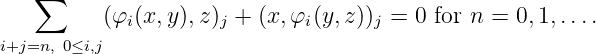
في حساباتنا (أدلة المطالبات بمساعدة SuperLie حزمة [Gr]) لقد تحققنا من استيفاء هذه الشروط وتفوقها (غير الواضح). لقد لاحظنا الحقيقة التالية المثيرة للاهتمام والتي لا يمكننا تفسيرها.
1.1.1. حقيقة.. في جميع الحالات ل p≠2 ونحن نعلم، باستثناء التشويهات التسلسلية 𝔰𝔳𝔢𝔠𝔱exp i و 𝔰𝔳𝔢𝔠𝔱 1+(1)، انظر الجدول (72)، إذا كان جبر لي (الفائق) البسيط له NIS ، فإن تشويهه له أيضًا NIS. نتائج تجارب الكمبيوتر (سلسلتان من الاستثناءات من الحقيقة، انظر التخمين 5.4.1) تزعجنا، ولكن هذه الاستثناءات هي أيضًا حقيقة (و “الحقيقة هي أشياء عنيدة").
في [PU, Proposition 5.10 (Proposition 4.4.1 in the arXiv version)]لقد ثبت ذلك باستخدام حجج بسيطة “تشويه مركب محدود الأبعاد جبر لي مع NIS ، يعادل تشويه مع الشكل دون تغيير ..." البيان في [PU] ليس من المدهش: على مجالات مميزة مغلقة من الدرجة الثانية ≠2 يحتوي أي NIS على مصفوفة وحدة جرام في بعض الأساس. إذا قمنا بتشويه هذا الشكل، فإنه يبقى في البداية غير منحط، ومن الممكن تغيير الأساس للحفاظ على نفس مصفوفة الجرام. ولكن لماذا يمكن تشويه الشكل مع الحفاظ على ثباته؟ الحقيقة 1.1.1 أمر لافت للنظر، في حين كان ينبغي توقع استثناءات منه.
1.2. أنواع جبر لي (الفائق) التي ندرسها.. (أ) على ℂ. لو A هو متماثل وقابل للعكس، ثم جبر لي (الفائق). 𝔤(A) له NIS ، انظر (4)بشرط سواء p≠2، أو p = 2 و 𝔤2α = 0 لأي جذر α.
لو A غير متماثل يتوافق مع جبر لي الفائق 𝔤(A) من نمو متعدد الحدود، هناك نوعان من هذه الجبر الفائق؛ على 𝔭𝔰𝔮ℓ(2)(n)، هناك NIS غريب لـ 𝔤(A) من نوع واحد، وليس NIS ل 𝔤(A) من النوع الآخر، انظر § 7.
على الحقول المغلقة جبريا 𝕂 من الخصائص p > 0، جبر لي محدود الأبعاد وجبر لي (الفائق). 𝔤(A) مع مصفوفة كارتان غير قابلة للتحلل A وقد تم تصنيفها، انظر [BGL].
نحن نحقق في وجود NIS على كلها التشويهات الحقيقية للجبر لي النموذج 𝔤(A)وعلى أقاربهم البسطاء. نحن لا نعرف كم عدد جبر لي غير المتماثل الموجود بين تشويهات المعطى 𝔤. للإجابة على هذا السؤال، من الضروري تطبيق (على سبيل المثال) تقنية Kuznetsov و Chebochko، راجع. [KuCh, ChKu]. في غياب الإجابة، اخترنا أساسًا في مجال علم التجانس، ولكل عنصر من عناصر الأساس، قمنا باختبار دورة مشتركة تمثله.
(ب) إلى إعلان جوماديلدييف [Dz1] على تصنيف NIS على بسيطة ℤ- متدرج الجبر الاتجاهي في مميزة p > 0، مستنسخة (مع إضافة دليل صريح) في كتاب سترادي وفارنشتاينر [SF]1 نضيف
(با) أمثلة على الجبر الاتجاهي البسيط لـ p = 5 و 3 وجدت بعد [Dz1, SF] تم نشرها، و
(Bb) تشويهات جبر لي (الفائق) البسيط محدود الأبعاد 𝔤(A) مع مصفوفة كارتان غير قابلة للتحلل A أو قسمات فرعية بسيطة (“أقارب") منها؛ (بالنسبة للحالات التي لا تحتوي هذه التشويهات على مصفوفة كارتانية) مصنفة ل p > 0، انظر [BGL, BGLd].
(ج) نقوم بتوسيع نطاق هذه التحقيقات في الحالتين (أ) و(ب) إلى جبر لي المتجهي البسيط فائقالجبر، أولا وقبل كل شيء ℂحيث يتم الحصول على التصنيف (انظر [Sh5, Sh14, LSh] و [K, K10, CaKa] والمراجع فيه) انتهى 𝕂 لـ p > 2 بقدر التخمين ونتائج التصنيف الجزئي (انظر [BGLLS, BGLLS1, BLLS]) تمكننا من تبني الأمثلة المعروفة وتصحيح بعض الادعاءات فيها [NS].
(د) نحن نعتبر أيضًا الجبر الفائق البسيط ذو الشكل الثنائي الثابت الفائق التناظر، وأقاربهم غير البسيطين، سواء كانوا محدودي الأبعاد أو متعددي الحدود.
نحن لا نعتبر المعلمات الفردية للتشويهات.
1.3. NIS: التطبيقات المحددة.. في (الكم) طريقة التشتت العكسي لحل المعادلات التفاضلية الجزئية: لمراجعة عامة، انظر [FT, §1.1, §4.1], [BSz]; ل مناقشة في سياق التكميمBV، انظر [KK]. من المعروف (بسبب P. Etingof، I. Losev) أن الجبر (الفائق) للأشياء التي يمكن ملاحظتها (مساحة Fock المشوَّهة) لنماذج Calogero المستندة إلى نظام الجذر بسيط بالنسبة لجميع قيم ثوابت الاقتران تقريبًا. كونستين وآخرون. وجدت قيمًا دقيقة لثوابت الاقتران التي تصبح فيها الأشكال الثنائية الناجمة عن الآثار (الفائقة) متدهورة، ويكتسب الجبر (الفائق) للأشياء القابلة للملاحظة مُثُلًا مثالية، انظر [KS, KT].
2. التمديد المزدوج: فكرة مثيرة للاهتمام
أمثلة معروفة على ملحقات مزدوجة غير قابلة للتحلل سيتم تعريفها قريبًا وهي جبر Kac–Moody 𝔤(A) مع مصفوفة كارتان غير قابلة للتحلل A على ℂ، انظر [Kb]; 𝔤𝔩(pn) و 𝔤𝔩(n|n + kp) لأي k ∈ℕ في مميزة p > 0; جبر لي الفائق 𝔤𝔩(n|n), 𝔮(n)، و 𝔭𝔬(0|m) لأي p. “لأكثر من أربعين عامًا كنا نتكلم نثرًا — ولم يكن ذلك معروفًا!"
2.1. تعريف التمديد المزدوج.. في هذا القسم نشرح كيفية بناء امتداد مزدوج يعمل ل جبر لي فوق حقول من أي خاصية، وجبر لي فائق فوق حقول ذات خاصية p≠2. بالنسبة للقضية (غير التافهة إلى حد ما). p = 2، انظر [BeBou]. لاحظ أن الجبر يكمن في الحقول 𝕂 من الخصائص p > 0 وجبر لي الفائق لأي p، وهو نظير NIS المعروف، ويسمى شكل كيلينغ، ينبغي البحث عنها في التمثيلات الإسقاطية. بمعنى آخر، يجب أن يكون التناظري المذكور مرتبطًا بامتداد مركزي غير تافه، انظر [Kapp, GP]. بقي فقط إضافة اشتقاق خارجي للحصول على كائن أجمل. يتطلب الامتداد المزدوج مكونًا آخر:NIS.
نظرا لجبر لي (الفائق) 𝔥، إنه امتداد مزدوج 𝔤 يتضمن في وقت واحد ثلاثة مكونات:
1) امتداد مركزي 𝔥c من 𝔥 مع المركز الممتد c، لذا 𝔥 ≃𝔥c∕𝕂c,
2) مشتق D من 𝔥c مثل هذا 𝔤 ≃𝔥c ⋉ 𝕂D، مبلغ شبه مباشر،
3) أ 𝔥-NIS ثابت B𝔥 على 𝔥. لاحظ أنه في الوضع الفائق، B𝔥 يمكن أن يكون غريبا.
ثم، في ظل ظروف معينة، هناك NIS B على 𝔤، الذي يمتد B𝔥، والحالات المثيرة للاهتمام هي تلك التي يكون فيها جبر لي 𝔤 ليس مجموعًا مباشرًا للمثل العليا 𝔥 و 𝕂c ⊕𝕂D; نحن نسمي هذه المبالغ المباشرة قابل للتحليل ملحقات مزدوجة يطلق عليه قابل للاختزال في [BeBou].
2.1.1. لمّة (على امتداد مركزي)..(اللمّة 3.6، صفحة 73 في [BB]) ليكن 𝔥 يكون جبر لي (الفائق) على الحقل 𝕂، يترك B𝔥 يكون 𝔥-NIS ثابت 𝔥، و D ∈𝔡𝔢𝔯 𝔥 اشتقاق من هذا القبيل B𝔥 هو D-ثابت، أي،
ثم الشكل الثنائي ω(a,b) := B𝔥(Da,b) هو أ 2-دورة جبر لي (الفائق) 𝔥. وهكذا في افتراضات اللمّة 2.1.1يمكننا بناء امتداد مركزي 𝔥ω من 𝔥 تعطى بواسطة الدورة المشتركة ω لهذا السبب. 𝔥ω∕𝕂c ≃𝔥.
دعونا معرفة ما هي الشروط ل D- ثبات الدورة المشتركة ω هي، أي، عندما يكون المشغل d ∈𝔤𝔩(𝔥ω)، مثل ذلك d(c) = 0 و d|𝔥 = D، هو اشتقاق من جبر لي (الفائق). 𝔥ω. ولهذا علينا أن نتحقق من ذلك
لدينا
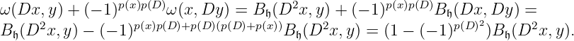
منذ النموذج B𝔥 غير منحط على 𝔥، ويترتب على ذلك المساواة (2) يحمل لأي x,y ∈𝔥 إذا وفقط إذا كان المشغل D إما حتى، أو فرديا، وهكذا D2 = 0. (تذكر مرة أخرى أننا لا نعتبر الجبر الفائق p = 2.)
وهكذا، لدينا جبر لي (الفائق). 𝔥ω ومشتقاته d. بشكل عام، نظرا للجبر الفائق التعسفي 𝔥 وحتى اشتقاقها Dيمكننا دائمًا إنشاء مجموع شبه مباشر 𝔥 ⋉ 𝕂D. ومع ذلك، إذا D من الغريب إنشاء مجموع شبه مباشر 𝔥 ⋉ 𝕂D، يجب علينا أن نطلب ذلك D2 هو اشتقاق داخلي. ولحسن الحظ، تم استيفاء شرط أقوى: d2 = 0، وبالتالي يمكننا بناء مجموع شبه مباشر 𝔤 = 𝔥ω ⋉ 𝕂d.
على جبر لي (الفائق) 𝔤، نعرّف شكلًا (فائق) التناظر B بوضع
2.1.2. لمّة (في الأشكال المتماثلة الثابتة غير المنحطة).. (نظرية 1، صفحة 68 في [BB]; لجبر لي: تمرين 2.10 في [Kb]) النموذج B تم تعريفه بواسطة (3) هي NIS على 𝔤. هكذا تم بناء جبر لي (الفائق). 𝔤 مع NIS B عليه يسمى امتداد مزدوج أو للتأكيد، امتداد-D، ل 𝔥.
2.1.2a. Remark. إذا كان الاشتقاق D هو داخلي، أي أنه يوجد x ∈𝔥 مثل هذا D = ad x، ثم المشغل D − ad x يختفي بنفس الطريقة استبدال D بواسطة D − ad x، ونحن نرى أن الدورة المشتركة ω هو أيضًا الصفر الواحد، ومن هنا جاء جبر لي (الفائق). 𝔤 هو مجموع مباشر لمثله الأعلى 𝔥 و 2المثالية التبادلية ذات الأبعاد، والتي حددنا عليها شكلًا ثنائيًا متماثلًا غير منحط. ومن الواضح أن هذا — قابل للتحليل — القضية ليست مثيرة للاهتمام.
2.2. جبر لي (الفائق) 𝔤 يمكن أن يكون امتدادًا مزدوجًا لجبر لي (الفائق). 𝔥.. ليكن 𝔤 يكون جبر لي على أي مجال 𝕂 أو جبر لي الفائق فوق الحقل 𝕂 من الخصائص p≠2; يترك B يكون شكلًا ثنائيًا متماثلًا ثابتًا (فائقًا) غير منحطًا 𝔤، و c≠0 عنصر مركزي من 𝔤. الثبات من النموذج B يعني ذلك B(c, [x,z]) = 0 لأي x,z ∈𝔤، أي: الفضاء c⊥ يحتوي على المبدل 𝔤(1) = [𝔤, 𝔤] من 𝔤، ومن ثم فهو مثالي. منذ النموذج B غير منحط، والبعد الترميزي لهذا المثل الأعلى يساوي 1.
لو B(c,c)≠0، ثم جبر لي (الفائق). 𝔤 هو مجرد مبلغ مباشر 𝔤 = 𝕂c ⊕ c⊥. هذه الحالة ليست مثيرة للاهتمام، أي، قابل للتحليل.
علاوة على ذلك، حتى لو B(c,c) = 0، لكن c
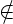
𝔤(1)، ثم أي مسافة فرعية V ⊂𝔤، مكملا 𝕂c وتحتوي على 𝔤(1) ، هو مثالًا، وجبر لي (الفائق). 𝔤 هو مجموع مباشر من المثل العليا: 𝔤 = V ⊕𝕂c. على المثالية V النموذج B يجب أن تتدهور مع أ 1- نواة الأبعاد. يترك Ker B|V = 𝕂d، حيث d هو عنصر في نواة التقييد B|V مثل هذا B(d,c) = 1. بما أن نواة الشكل الثابت مثالية، و d لا يمكن الاستلقاء فيه 𝔤(1) ، نرى ذلك V = 𝔥 ⊕𝕂d، حيث 𝔥 هو مساحة فرعية تعسفية من V متمم 𝕂d وتحتوي على 𝔤(1)، وبالتالي مثالية. ثم جبر لي (الفائق). 𝔤 هو مجموع مباشر من المثل العليا 𝔤 = 𝔥 ⊕𝕂d ⊕𝕂c والشكل B غير منحط على 𝔥، وكذلك على المثالية التبادلية 𝕂d ⊕𝕂c. وبعبارة أخرى، هذه الحالة قابل للتحليل.2.2.1. نظرية.. ليكن 𝔤 يكون جبر لي على أي مجال 𝕂 أو جبر لي الفائق فوق الحقل 𝕂 من الخصائص p≠2; يترك B يكون شكلًا ثنائيًا متماثلًا ثابتًا (فائقًا) غير منحطًا 𝔤، و 𝔷(𝔤) مركز 𝔤. لو 𝔤(1) ∩𝔷(𝔤)≠0، ثم 𝔤 هو امتداد مزدوج لجبر لي (الفائق). 𝔥.
Proof. ليكن c≠0 يكون عنصرا مركزيا في 𝔤 الواقع في 𝔤(1). لقد رأينا بالفعل أن الفضاء V := c⊥ يحتوي 𝔤(1) ، ومن ثم فهو مثالي ل 𝔤. منذ c ∈ 𝔤(1)لدينا B(c,c) = 0. عدم الانحطاط B يعني، أولاً، codim V = 1وثانيا، هناك عنصر d ∈𝔤 ∖ V مثل هذا B(d,c) = 1. منذ c = [x,y] على وجه اليقين x, y ∈𝔤، ثبات B يعني ذلك
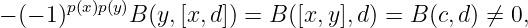
أي.، d ليست مركزية.
يترك 𝔥 := V∕𝕂c. العنصر c ينتمي إلى نواة التقييد B|V . لذلك B ينزل على الحاصل 𝔥، ويبقى 𝔥-ثابت. تشير إلى هذا التقييد بواسطة B𝔥. عمل d ينزل أيضا على 𝔥، تعريف الاشتقاق D من 𝔥:
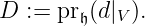
الى جانب ذلك، 𝔤-ثبات B يعني ذلك B𝔥 هو D-ثابت.
دل W := d⊥∩ V . ثم V = 𝕂c ⊕ W (كمساحات خطية) والإسقاط الطبيعي pr : W→𝔥 هو تماثل المساحات الخطية، أي يمكننا أن نعتبر W = pr −1(𝔥) كما “تضمين 𝔥 (كمساحة) في 𝔤".
ونتيجة لذلك، نرى ذلك 𝔤 يتم طهيه من 𝔥 عن طريق الامتداد المركزي والاشتقاق أثناء النموذج B يتم الحصول عليها من النموذج B𝔥 بدقة قواعد بناء الامتدادات المزدوجة. لذلك يبقى فقط حساب دورة مشتركة σ تحديد الامتداد المركزي
يترك x,y ∈ W. ثم
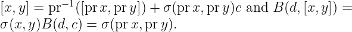
والآن، نستخدم شرط الثبات للعدد الثلاثي x,d,y:
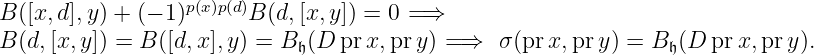
ولكن هذا هو بالضبط البيان الذي 𝔤 هو امتداد مزدوج ل 𝔥. □
2.3. على التاريخ.. في 1984، فكرة امتداد مزدوج من جبر لي (أقصر وأكثر إيحاءً ويسمى امتداد-D في [BeBou]) كان متميزا، انظر [MR]. قام Medina وRevoy ببناء جبر لي بشكل استقرائي 𝔤 مع غير المنحطة 𝔤- شكل ثنائي متماثل ثابت B𝔤 من الجبر 𝔥 من البعد dim 𝔤 − 2 بمركز غير صفري وغير منحط 𝔥- شكل ثنائي متماثل ثابت B𝔥. في نفس الوقت تقريبًا كانت هناك ورقة مكتوبة [FS]، حيث جبر لي الممتد بشكل مضاعف 𝔤 و
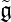
تم اعتبارها تصل إلى قياس متساو، أي التماثل π : 𝔤 → مثل هذا
مثل هذا
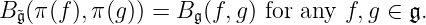
ومن المعقول أن نأخذ في الاعتبار فئات الامتدادات المزدوجة حتى القياس المتساوي، وليس ملحقات مزدوجة فردية. وقد ثبت أن هذا مفيد، على سبيل المثال، في [BeBou] حيث أوضحت عدة فئات جديدة من الامتدادات المزدوجة بعض النتائج [BGLL].
في [BB]، وهي واحدة من الأوراق الأولى حول الامتدادات المزدوجة، وقد امتدت الفكرة إلى الجبر الفائق p≠ 2. للحصول على أحدث التعميمات المختلفة للنظرية 2.2.1، انظر [ABB].
الورقة [BeBou] يعطي مراجعة للأمثلة المعروفة للامتدادات المزدوجة، ولكن نتائجها الرئيسية والجديدة والأكثر إثارة للاهتمام هي الإنشاءات العامة وأمثلة للامتدادات المزدوجة للجبر الفائق في مجالات الخصائص p = 2.
3. جبر جبر لي (الفائق) مع مصفوفات كارتان غير قابلة للتحلل
أي جبر لي (الفائق) 𝔤(A) مع مصفوفة كارتان متماثلة A مع الإدخالات في المجال الأرضي 𝕂 له شكل ثنائي متماثل ثابت (فائق) ؛ هذا النموذج غير منحط إذا A غير قابل للعكس. للحصول على تعريف دقيق لمصفوفة كارتان لجبر لي في الحالة التي p > 0 وجبر لي الفائق لأي p، انظر [BGL]، حيث يتم تصنيف جبر لي (الفائق) محدود الأبعاد مع مصفوفات كارتان غير القابلة للتحلل 𝕂. نوعان من جبر لي (الفائق) اللانهائي الأبعاد مع عدم قابلية التحليل A مصنفة ويمكن دراستها عن كثب:
(أ) محدود الأبعاد ونمو متعدد الحدود (واحد متماسك و “تآلفية Kac–Moody" (سوبر) الجبر، انظر [LSS, HS, BGL]) و
(ب) فئة واحدة من النمو الأسي: “تقريبًا متقارب "، ويعرف أيضًا باسم. “القطعي"، الجبر وجبر لي الفائق، انظر [CCLL].
نشير إلى العناصر الإيجابية لأساس شيفالي (للاطلاع على تعريفه، انظر [CCLL])، بواسطة xi، السلبية المقابلة تلك هي yi; وضعنا hi := [xi,yi] ل مولدات xi, yi فقط.
3.1. NIS على 𝔤(A) مع A قابلة للتماثل.. ليكن A = DB، حيث D = diag(𝜀1,…,𝜀n) و B = BT ، كن n × n مصفوفة كارتان, n < ∞. لإثبات الوجود والتفرد (حتى عامل عددي) لـ NIS في الحالة غير الفائقة ℂ، انظر [Kb, Th.2.2, p.17]، التفوق والتعميم لمجالات الخصائص المغلقة جبريًا p > 2 فوري إذا كان أي منهما p≠2، أو p = 2 و 𝔤2α = 0 لأي جذر α; وهي على النحو التالي. حدد الشكل الثنائي الخطي الثابت (الفائق) المتماثل (⋅,⋅) حثياً، بدءاً بمولدات شيفالي xi,yi من الدرجة ±1 على النحو التالي، حيث المؤشرات في 𝔤±1 هي درجات النسبية الرئيسية ℤ- الدرجات، بينما في 𝔤α أنها تشير إلى الأوزان:
النموذج (⋅, ⋅) هي NIS على 𝔤(A) لأي متماثل A، حتى لو A = 0. (على سبيل المثال، إذا A غير قابل للعكس من الكورانك 1، النموذج يستحث NIS على 𝔤(A)(1)∕𝔠 ، حيث 𝔤(A)(1) := [𝔤(A),𝔤(A)] و 𝔠 هو مركز 𝔤(A). ومع ذلك، هذا ليس مثيرًا للاهتمام: فقد تم إعطاء النقطة NIS 𝔥، حدد NIS على امتداد مزدوج لـ 𝔥.)
في الأقسام الفرعية التالية نعتبر منتهية الأبعاد جبر لي (الفائق) المعياري 𝔤(A) مع مصفوفة كارتان غير قابلة للتحلل A مصنفة في [BGL]. كل هذه الجبر لي (على الترتيب. جبر لي الفائق) جامدة ل p > 3 (احتراما ل p > 5، باستثناء 𝔬𝔰𝔭a(4|2))، انظر [BGLd]. أدناه نعتبر جميع جبر لي المعياري غير الجامد وجبر لي الفائق مع مصفوفة كارتان غير القابلة للتحلل وأقاربها البسيطة، انظر [BLW] و [BGLd]باستثناء تلك المشوَّهة بمعلمة فردية.
3.1.1. Remark. يبدو أن ل p = 2 جبر لي الفائق مع مسافات الجذر 𝔤2α≠0 لا يمكن أن يكون NIS منذ ذلك الحين 𝔬𝔬IΠ(1)(1|2) — التناظرية 𝔬𝔰𝔭(1|2) لـ p = 2، انظر [BGL] — لا يملك ذلك. إذا كان النموذج (⋅,⋅) غير متغير، ثم يتم انتهاك عدم الانحطاط:
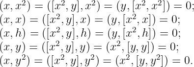
3.2. التشويهات 𝔬(5) لـ p = 3.. تشكل هذه التشويهات نوعين غير متماثلين، انظر [BLW]: 1) العائلة البارامترية 𝔟𝔯(2; 𝜀) مع مصفوفة كارتان
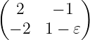
; لها NIS حسب الوصفة (4). لاحظ أن 𝔟𝔯 (2; 𝜀) بسيط إذا 𝜀≠0، و 𝔟𝔯(2; −1) = 𝔬(5) ≃𝔰𝔭(4).2) جبر لي البسيط الاستثنائي 𝔏(2, 2) اكتشفه أ. كوستريكين وكوزنتسوف. أذكر وصف 𝔏(2, 2)، انظر [BLW, Prop. 3.2]. ال قوس الاتصال من اثنين من كثيرات الحدود في القوى المنقسمة f,g ∈𝒪(p,q,t; N) يتم تعريفه ليكون
ليكن α و β يكون جذور بسيطة ل 𝔬(5) و Eγ يكون متجهات الجذور المقابلة إلى الجذر γ. وفيما يلي قوس في 𝔏(2, 2)
نظرا من حيث أساس 𝔟𝔯(2; 𝜀) يتم التعبير عنها من خلال توليد وظائف 𝔨(3; ⊮):
![|------------------------------------------------------------------------|
degthe generatorits weight ∼ its generating function(=the Chevalley basis vector) |
|------------------------------------------------------------------------|
−2E−2α−β = {E −α,E −α−β} ∼ 1(= y4) |
|------------------------------------------------------------------------|
−1E−α-∼-p(=-y2);--E-−α−β-=-{E-−β,E−-α} ∼-q(=--y3)---------------------------|
0Hα ∼ − 𝜀t+ pq(= h2); H β ∼ − pq(= h1); E β ∼ p2(= y1); E −β ∼ − q2(= x1)|
|--------------2----------------------------------------2----------------|
1Eα-∼-−-(1-+-𝜀)pq-+-𝜀qt(=-x2);--Eα+-β =-{Eβ,E-α} ∼-(1+-𝜀)p-q +-𝜀pt(=-x3)---|
2E2α+β = {E α,Eα+β } ∼ 𝜀(1 + 𝜀)p2q2 + 𝜀2t2(= x4 ) |
|-------------------------------------------------------------------------
|](NIS18x.png)
3.2.1. المطالبة (NIS بشأن تشويهات 𝔬(5)).. التشويه (6) من 𝔬(5) يحافظ على NIS بنفس مصفوفة جرام التي تحددها الوصفة (4) تطبق على 𝔬(5). في المطالبات 3.3, 3.4 نحن نعتبر جميع جبر لي (الفائق) مع مصفوفة كارتان غير قابلة للتحلل (ليست متماثلة 𝔟𝔯(2; 𝜀)) التي يمكن أن تكون مشوهة باستخدام معلمة زوجية، انظر [BGLd]، لكن تشويهاتها لا تحتوي على مصفوفة كارتان. نحن نعتبر التشويهات ذات المعلمة الزوجية نفس المساحة ولكن بأقواس مختلفة؛ وبهذه الطريقة يمكننا مقارنة مصفوفات جرام للأشكال الثنائية في الجبر وتشويهه.
3.3. المطالبة (NIS بشأن تشويهات 𝔤 = 𝔟𝔯(3) و 𝔴𝔨(4; α)).. لجبر لي 𝔤 = 𝔟𝔯(3)، و 𝔴𝔨(4; α) لـ α≠ 0, 1، حيث 𝔴𝔨(4; α) ≃𝔴𝔨(4; α′) إذا وفقط إذا α′ = 1 α، انظر [BGL]وجبر لي الفائق 𝔟𝔯𝔧(2; 3)، تعتمد جميع التشويهات على معلمات متساوية (كما ثبت في [BGLd]). تحافظ هذه التشويهات على NIS بنفس مصفوفة جرام مثل تلك التي تحددها الوصفة (4) تطبق على 𝔤باستثناء التشويه 𝔴𝔨(4; α) مع دورة مشتركة λc0 مع المعلمة λ ∈𝕂 متميزة عن 0 و α، عندما تكون مصفوفة جرام مختلفة عن النموذج
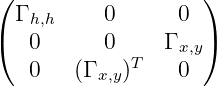
، حيث لنفس ترقيم مولدات تشيفالي h, x و y كما في [BGL] لمصفوفة كارتان التي تم الحصول عليها من (8) عند λ = 0لديناو
حيث A2 :=
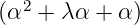
و A 3 :=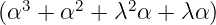
. لتشويه 𝔴𝔨 (4; α) مع دورة مشتركة αc0، أي عندما تكون معلمة التشويه يساوي α، ليس لدينا سوى منحط ثابت شكل ثنائي متماثل Bαc0 من أجل ذلك Bαc0(x2,y2)≠0 وصفر على جميع الأزواج الأخرى من ناقلات أساس شيفالي.3.4. المطالبة (NIS بشأن تشويهات 𝔴𝔨(3; α)).. للجبر لي 𝔴𝔨(3; α) لـ α≠0, 1، حيث 𝔴𝔨(3; α) ≃𝔴𝔨(3; α′) إذا وفقط إذا α′ = aα + b cα + d بالنسبة للبعض
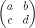
∈ SL(2; ℤ∕2)، انظر [BGL]، تعتمد جميع التشويهات على معلمات متساوية ([BGLd]). تحافظ هذه التشويهات على NIS بنفس مصفوفة جرام مثل تلك تحددها الوصفة (4) تطبق على 𝔤 باستثناء تشويه مع الدورة المشتركة λc0 مع المعلمة λ ∈𝕂 متميزة عن 0 و α، متى مصفوفة جرام هي شكل مختلف Bα,λ :=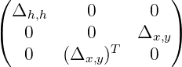
، حيث لنفس الترقيم مولدات تشيفالي h, x و y كما في [BGL] لمصفوفة كارتان التي تم الحصول عليها من المصفوفة (10) عند λ = 0لديناو
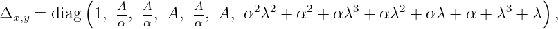
حيث A = αλ + α + λ2 + λ.
نواة Bα,λ هو مركز 𝔴𝔨(1)(3; α) امتدت بواسطة ناقلات c := h 1 + αh3 وتقييد Bα,λ إلى 𝔴𝔨(1)(3; α)∕𝕂c هي NIS.
لتشويه 𝔴𝔨(1)(3; α)∕𝕂c مع دورة مشتركة αc 0، أي عندما تكون معلمة التشويه يساوي α، ليس لدينا سوى منحط ثابت شكل ثنائي متماثل Bαc0 من أجل ذلك Bαc0(x1,y1)≠0 وصفر على جميع الأزواج الأخرى من ناقلات أساس شيفالي.
4. الجبر الخطي (المصفوفة) والجبر الاتجاهي (الفائق) ؛ أقاربهم البسيطين
في نظرية التمثيل، من المعقول النظر في جبر لي (الفائق). 𝔤 حقول متجهة مع طوبولوجيا طبيعية محددة بواسطة ترشيح Weisfeiler والتي يتم تحديدها بدورها بواسطة متجه تصنيف r، انظر [LSh, BGLLS]. في بحثنا عن NIS على 𝔤، طوبولوجيا في الفضاء 𝔤 لا صلة له بالموضوع، ونحن نعتبر هذه الجبر لي (الفائق) مجردة. نحن نتذكر قائمة بجميع جبر لي (الفائق) المعياري البسيط ذو الأبعاد المحدودة المعروف p ≥ 3، بالإضافة إلى قائمة جبر لي البسيط (الفائق) لنمو متعدد الحدود ℂ، انظر [LSh, GLS]; نشير إلى أي منهم له NIS.
نصف كل جبر لي فائق متجهي بوصفه ناتج إطالة كارتان (المعممة) لزوج يتكون من جبر لي فائق وموديول عليه.
4.1. الجبر الخطي (المصفوفة) جبر لي (الفائق)... إن خطي عام لي الجبر الفائق لجميع المصفوفات الفائقة من حيث الحجم Par المقابلة للعوامل الخطية في الفضاء الفائق V = V ⊕ V فوق الميدان الأرضي 𝕂 يُشار إليه بـ 𝔤𝔩(Par)، حيث Par = (p1,…,p| Par |) هو أمر جمع التكافؤ من ناقلات الأساس V و | Par | = dim V ; عادة، ل قياسي (الأبسط) الشكل، 𝔤𝔩(,…,,,…,) يتم اختصاره إلى 𝔤𝔩 (dim V | dim V ). أي مصفوفة فائقة من 𝔤𝔩(Par) يمكن يتم التعبير عنها بشكل فريد كمجموع أجزائها الزوجية والفردية؛ في التنسيق القياسي هذا هو تعبير الكتلة التالي؛ على المبالغ غير الصفرية يتم تعريف التكافؤ:
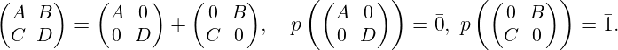
إن الأثر الفائق هي الخريطة 𝔤𝔩(Par)→𝕂, (Xij)∑ (−1)piX ii، حيث Par = (p1,…,p| Par |). وهكذا، في الشكل القياسي، str
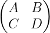
= tr A − tr D.لاحظ ذلك من أجل جبر لي الفائق 𝔤𝔩𝒞(p|q) على الجبر الفائق التبادلي 𝒞 لدينا
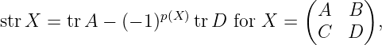
وهكذا بالنسبة للمصفوفات الفائقة الفردية التي تحتوي على إدخالات 𝒞مثل هذا 𝒞≠0، يتزامن التتبع الفائق مع التتبع.
منذ str[x,y] = 0، الفضاء الفرعي الذي لا أثر له المصفوفات تشكل خطية خاصة جبر لي الجزئي 𝔰𝔩 (Par).
ومع ذلك، هناك نسختان فائقتان على الأقل من 𝔤𝔩(n)لا واحد؛ لأسباب، راجع [Lsos, Ch1, Ch.7]. النسخة الاخرى — 𝔮(n) — يسمى كويري جبر لي الفائق ويعرف بأنه الذي يحفظ هيكل معقد قدمه فردي مؤثر J، أي.، 𝔮(n) هو المركزي C(J) من J:
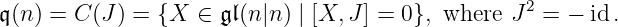
ومن الواضح أنه من خلال تغيير الأساس يمكننا تقليله J إلى الشكل (الشكل)
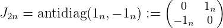
في المعيار تنسيق وبعد ذلك 𝔮(n) يأخذ النموذج
على 𝔮(n)، ال الأثر الكويري تم تعريفه: qtr: (A,B) tr B. تدل على 𝔰𝔮(n) جبر لي الفائق من
المصفوفات عديمة الأثر الكويري. نضع 𝔭𝔰𝔮(n) := 𝔰𝔮(n)∕𝕂12n.
tr B. تدل على 𝔰𝔮(n) جبر لي الفائق من
المصفوفات عديمة الأثر الكويري. نضع 𝔭𝔰𝔮(n) := 𝔰𝔮(n)∕𝕂12n.
4.1.1. المصفوفات الفائقة للمشغلين.. إلى الخريطة الخطية للمساحات الفائقة F : V →W هناك يتوافق خريطة مزدوجة F∗ : W∗→V ∗ بين الفضاءين الفائقين. في القواعد تتكون من ناقلات متجانسة vi ∈ V من التكافؤ p(vi)، و wj ∈ W من التكافؤ p(wj)الصيغة F(vj) = ∑ iwiXij يعين ل F ال مصفوفة فائقة X. في القواعد المزدوجة، فائقtransposed مصفوفة Xst يتوافق مع F ∗ :
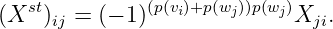
4.1.2. المصفوفات الفائقة للأشكال الثنائية.. المصفوفات الفائقة X ∈𝔤𝔩(Par) مثل هذا
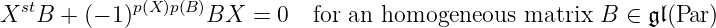
يشكل جبر لي الفائق 𝔞𝔲𝔱(B) الذي يحفظ شكل ثنائي Bf على V الذي مصفوفة B = (B ij) تعطى بواسطة الصيغة
من أجل التعرف على شكل ثنائي B(V,W) مع عامل، عنصر من Hom(V,W∗)، المصفوفة B من الشكل الثنائي Bf تم تعريفه في [Lsos, Ch.1] بواسطة مكافئ. (12)، ليس بالشكل الذي يبدو طبيعيًا ولكنه غير مناسب لصيغة التعريف هذه
علاوة على ذلك، بالنسبة للأشكال الغريبة Bالتعريف (13) يتناقض مع التماثل الواضح لـ NIS المحدد بواسطة qtr على 𝔮. في الواقع، تناظر ذات شكل متجانس Bf يعني بحسب [Lsos, Ch.1]، الذي - التي Bf (v, w) = (−1)p(v)p(w)Bf(w,v) لأي v ∈ V و w ∈ W، أي، مصفوفة لها B =
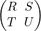
يفي بالشرطبصورة مماثلة، مضادتناظر من B يعني ذلك Bu = −B. وهكذا نرى أن upضعting من الأشكال الثنائية u: Bil (V, W )→ Bil(W,V )، والتي ل فضاءات والحالة حيث V = W يتم التعبير عنها على المصفوفات من حيث التحويل، هو عملية جديدة، ليس النقل الفائق.
مراقبة ذلك المرور من V إلى Π(V ) يتحول كل متماثل شكل B على V إلى واحد غير متماثل Π(V ).
الأشكال (الأشكال) العادية الأكثر شيوعًا من التناظر الفائق غير المتحلل النموذج هي تلك التي تكون مصفوفاتها الفائقة في التنسيق القياسي موجودة في الأشكال العادية التالية:
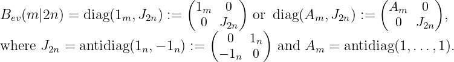
التدوين المعتاد ل 𝔞𝔲𝔱(Bev(m|2n)) هو 𝔬𝔰𝔭(m|2n); في بعض الأحيان يكتب المرء بشكل أكثر وضوحا، 𝔬𝔰𝔭 sy (m|2n). مراقبة أن الشكل الثنائي غير المتماثل غير المنحل محفوظ بواسطة “التماثل المتعامد” يكمن في الجبر الفائق، 𝔰𝔭𝔬(2n|m) أو، بحكمة أكبر، 𝔬𝔰𝔭a(m|2n)، وهو متماثل ل 𝔬𝔰𝔭 sy (m|2n).
غير منحط تماثلي شكل ثنائي غريب Bodd(n|n) يمكن يمكن تقليله إلى شكل عادي تكون مصفوفته
بالتنسيق القياسي J2n، انظر (14)، لا Π2n := antidiag(1n, 1n). الشكل الطبيعي لل مضادغريب متماثل
غير منحط النموذج بالتنسيق القياسي هو Π2n. التدوين المعتاد ل 𝔞𝔲𝔱(Bodd(Par)) هو 𝔭𝔢(Par). المرور
من V إلى Π(V ) يؤسس التماثل 𝔭𝔢sy(Par) 𝔭𝔢a(Par). هذه جبر لي فائق متماثل يُطلق على الجبر
الفائق، كما اقترح أ. ويل، فوق سمبلكتي.
𝔭𝔢a(Par). هذه جبر لي فائق متماثل يُطلق على الجبر
الفائق، كما اقترح أ. ويل، فوق سمبلكتي.
لاحظ أنه على الرغم من جبر لي الفائق 𝔬𝔰𝔭sy(m|2n) و 𝔬𝔰𝔭a(m|2n)، إلى جانب 𝔭𝔢sy(n) و 𝔭𝔢a(n)، متماثلان، والفرق بينهما في بعض الأحيان حاسمة، على سبيل المثال، يطيل كارتانهم، انظر الأقسام الفرعية 4.6, 4.7, 4.10، مختلفان تمامًا، انظر [Sh5].
ال محيطي خاص الجبر الفائق بسيط؛ يتم تعريفه ليكون
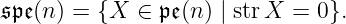
من الأمور ذات الأهمية الخاصة بالنسبة لنا أيضًا جبر لي الفائق (هنا char 𝕂 > 2)
والامتداد المركزي غير التافه 𝔞𝔰 من 𝔰𝔭𝔢(4) ذلك وصفنا بعد بعض التحضير.
وأخيرا، لاحظ أن هذا المصطلح فائقالمتماثل المطبق على الأشكال الثنائية في عنوان هذه الورقة يشير إلى الخاصية Bij = (−1)p(vi)p(vj)B ji من مصفوفة الشكل الثنائي (12); حسب التعريف (14) هذا النموذج هو متماثل.
4.2. أ. الامتداد المركزي لسيرجيف 𝔞𝔰 من 𝔰𝔭𝔢(4)..في 1970أثبت A. Sergeev ذلك الأمر ℂ هناك واحد فقط الامتداد المركزي غير التافه لـ 𝔰𝔭𝔢(n) لـ n > 2. إنه موجود فقط ل n = 4 ونشير إليه ب 𝔞𝔰 . (لتعميم نتيجة سيرجيف على نظائرها 𝔰𝔭𝔢(n) فوق الحقول 𝕂 من الخصائص p > 0، انظر [BGLL].) دعونا نمثل تعسفيا عنصر A ∈𝔞𝔰 كزوج A = x + d ⋅ z، حيث x ∈𝔰𝔭𝔢(4), d ∈ℂ و z هو العنصر المركزي. القوس في 𝔞𝔰 هو
حيث ～ يتم تمديده عبر الخطية من المصفوفات cij = Eij − Eji على الذي
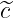
ij = ckl لأي حتى التقليب (1234) (ijkl).
الجبر لي الفائق 𝔞𝔰 يمكن أيضًا وصفها بمساعدة تمثيل سبينور، انظر [LShs]. لهذا، فكر في جبر
بواسون الفائق 𝔭𝔬(0|6)، جبر لي الفائق الذي الفضاء الفائق هو جبر غراسمان الفائق Λ(ξ,η) تم
إنشاؤها بواسطة ξ1,ξ2,ξ3,η1,η2,η3 و قوس هو قوس بواسون (36).
(ijkl).
الجبر لي الفائق 𝔞𝔰 يمكن أيضًا وصفها بمساعدة تمثيل سبينور، انظر [LShs]. لهذا، فكر في جبر
بواسون الفائق 𝔭𝔬(0|6)، جبر لي الفائق الذي الفضاء الفائق هو جبر غراسمان الفائق Λ(ξ,η) تم
إنشاؤها بواسطة ξ1,ξ2,ξ3,η1,η2,η3 و قوس هو قوس بواسون (36).
أذكر ذلك 𝔥(0|6) = Span(Hf∣f ∈ Λ(ξ,η)). الآن، لاحظ ذلك 𝔰𝔭𝔢(4) يمكن تضمينها في 𝔥(0|6)، انظر [ShM]. في الواقع، الإعداد deg ξi = deg ηi = 1 للجميع i نقدم أ ℤ-التصنيف على Λ(ξ,η) والذي بدوره يحفز أ ℤ-التصنيف على 𝔥(0|6) من النموذج 𝔥(0|6) = ⊕i≥−1𝔥(0|6)i. منذ 𝔰𝔩(4)𝔬(6)، يمكننا التعرف 𝔰𝔭𝔢 (4)0 مع 𝔥(0|6)0.
وليس من الصعب أن نرى أن عناصر الدرجة −1 في الدرجات القياسية 𝔰𝔭𝔢(4) و 𝔥(0|6) تشكل متماثل
𝔰𝔩
(4) 𝔬(6)-الوحدات النمطية. إنه يخضع للتحقق المباشر أنه من الممكن تضمينها 𝔰𝔭𝔢(4)1 إلى
𝔥(0|6)1 .
𝔬(6)-الوحدات النمطية. إنه يخضع للتحقق المباشر أنه من الممكن تضمينها 𝔰𝔭𝔢(4)1 إلى
𝔥(0|6)1 .
امتداد سيرجيف 𝔞𝔰 هو نتيجة تقييد دورة مشتركة 𝔥(0|6) إلى 𝔭𝔬(0|6) إلى 𝔰𝔭𝔢(4) ⊂𝔥(0|6). التشويهات الكمي 𝔭𝔬 (0|6) إلى 𝔤𝔩(Λ(ξ)); من خلال الخرائط Tλ : 𝔞𝔰→𝔭𝔬(0|6)→𝔤𝔩(Λ(ξ)) هي تمثيلات 𝔞𝔰 في 4|4- وحدات الأبعاد spin λ متماثل لبعضهم البعض للجميع λ≠0. الصيغة الصريحة ل Tλ على النحو التالي:
حيث 14|4 هي مصفوفة الوحدة و  تم تعريفه في الخط تحت مكافئ. (16). بوضوح، Tλ هو تمثيل غير قابل
للاختزال لأي λ.
تم تعريفه في الخط تحت مكافئ. (16). بوضوح، Tλ هو تمثيل غير قابل
للاختزال لأي λ.
4.3. الإسقاطية.. إذا 𝔰 هو جبر لي للمصفوفات العددية، و 𝔤 ⊂𝔤𝔩(n|n) هو جبر لي فائق جزئي يحتوي 𝔰، ثم إسقاطي جبر لي الفائق من النوع 𝔤 هو 𝔭𝔤 = 𝔤∕𝔰. أمثلة: 𝔭𝔮(n), 𝔭𝔰𝔮(n); 𝔭𝔤𝔩(n|n), 𝔭𝔰𝔩(n|n); بينما 𝔭𝔤𝔩 (p|q)𝔰𝔩(p|q) إذا p≠q.
4.4. “"سلسلة كلاسيكية من الجبر الفائق الموجه ℂ.. في الجدول، يشيرFDإلى الحالات الخاصة ذات البعد المحدود.
![|---------------------------------| |---|----------------------------------|
Nthe algebra,-conditions-for-its simplicity| |N--|the-algebra, conditions-for-its simplicity
1𝔳𝔢𝔠𝔱(m |n) for m ≥ 1 (FD: m = 0, n > 1) |9 |𝔪 (n) |
|---------------------------------| |---|----------------------------------|
2𝔰𝔳𝔢𝔠𝔱(m|n) for m->-1 (FD:-m-=-0, n->-2)|10|𝔰𝔪-(n-) for-n >-1-but-n ⁄=-3---------|
3𝔰𝔳𝔢𝔠𝔱(1)(1|n) for n > 1 | |11 |𝔟λ(n) for n > 1 and λ ⁄= 0,1,∞ |
|---------------------------------| |---|-(1)------------------------------|
4,FD𝔰𝔳𝔢𝔠𝔱(0|n)-for-n >-2------------------| |12-|𝔟1-(n)-for-n >-1-------------------|
5𝔨(2m +1|n) | |13 |𝔟(∞1)(n) for n > 1 |
|---------------------------------| |---|----------------------------------|
6𝔥(2m|n) for m->-0------------------| |14-|𝔩𝔢(n-) for-n >-1--------------------|
7𝔥λ(2|2) for λ ⁄= − 2,− 32,− 1, 12,0,1,∞ | -15--𝔰𝔩𝔢(1)(n)-for-n >-2-------------------
(1)--------------------------------| | | ～ n−1 n−1 |
8,FD𝔥-(0|n)-for-n >-3-------------------- |16-|𝔰𝔟μ(2---−-1|2---) for μ-⁄=-0 and-n->-2
| | |](NIS54x.png)
نواصل شرح الترميز المستخدم في الجدول (18) حتى القسم الفرعي 4.15.
1) الجبر العام. يترك x = (u1,…,un,𝜃1,…,𝜃m)، حيث ui حتى غير محدد و 𝜃j غريبة. تعيين 𝔳𝔢𝔠𝔱 (n|m) := 𝔡𝔢𝔯 ℂ[x]; يطلق عليه المتجه العام جبر لي الفائق.
2) الجبر الخاص. ال التباعد من الميدان D = ∑ ifi
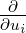
+ ∑ jgj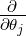
هي الدالة (في حالتنا: أ كثيرة الحدود، أو أ سلسلة)∙الجبر لي الفائق 𝔰𝔳𝔢𝔠𝔱(n|m) := {D ∈𝔳𝔢𝔠𝔱(n|m)∣ div D = 0}يسمى خاص (أو عديمة التباعد) الجبر الفائق المتجه. على قدم المساواة،
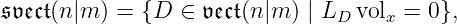
حيث vol x هو شكل حجم مع معاملات ثابتة في الإحداثيات x و LD مشتقة لي على طول مجال المتجه D.
∙الجبر لي الفائق 𝔰𝔳𝔢𝔠𝔱(1)(1|m) := [𝔰𝔳𝔢𝔠𝔱(1|m),𝔰𝔳𝔢𝔠𝔱(1|m)] يسمى ناقلات خاصة لا أثر لها الجبر الفائق.
∙التشويه 𝔰𝔳𝔢𝔠𝔱(0|m) هو جبر لي الفائق الجبر
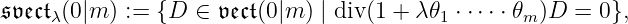
حيث p(λ) ≡ m (mod 2). ويسمى مشوه خاص (أو عديمة التباعد) متجه الجبر الفائق. بوضوح،
𝔰𝔳𝔢𝔠𝔱
λ
(0|m) 𝔰𝔳𝔢𝔠𝔱μ(0|m) لـ λμ≠0. لذلك نشير باختصار هذه التشويهات بواسطة
𝔰𝔳𝔢𝔠𝔱μ(0|m) لـ λμ≠0. لذلك نشير باختصار هذه التشويهات بواسطة
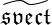
(0|m). لاحظ ذلك ل m غريبة معلمة التشويه ، λ، هو غريب.3) جبر الحفاظ على معادلات فاف ومحددة التفاضلية 1- و 2-نماذج.
∙ضع u = (t,p1,…,pn,q1,…,qn); يترك
النموذج 1 يسمى تماسيالنموذج 0 يسمى سمبلكتي. في بعض الأحيان إنه أكثر ملاءمة للضبط Θ = حيث
وبدلا من  0 أو
0 أو  1 نأخذ α1 و ω0 = dα1على التوالي، حيث
1 نأخذ α1 و ω0 = dα1على التوالي، حيث
إن تماسي جبر لي الفائق هو الذي يحافظ على معادلة فاف
أو، بشكل مكافئ، يحافظ على التوزيع الذي يميزه النموذج α1، أي الجبر الفائق
الجبر لي الفائق
يسمى Poisson الجبر الفائق.
التعبير "المتماثل" أعلاه لـ α1 تحظى بشعبية كبيرة بين الجبريون. بسبب تماثله فهو مناسب في العمليات الحسابية. في الميكانيكا والهندسة التفاضلية (في عصر ما قبل الفائق)، وفي الخصائص 2، ما يلي التعبير عن النموذج α1 يستخدم:
∙وبالمثل، تعيين u = q = (q1,…,qn)، يترك 𝜃 = (ξ1,…,ξn; τ) يكون غريبا. مجموعة (التعبيرات الموجودة بين قوسين مخصصة للخاصية 2)
وقم بتسمية هذه النماذج، كما نصح أ. ويل، بـ periتماسي و فوق سمبلكتي، على التوالى.
ال periتماسي الجبر الفائق هو الذي يحافظ على معادلة بفاف
أو، بشكل مكافئ، يحافظ على التوزيع الذي يميزه النموذج α0:
الجبر لي الفائق
يسمى Buttin الجبر الفائق تكريما لـ C. Buttin الذي كان أول من أظهر أن قوس سكوتن من الوظائف التي تولد 𝔟(n)، انظر (38)، يرضي الفائق هوية جاكوبي.
فيما يلي كل منها عديمة التباعد (أو خاص) تكمن تحت الجبر
4.5. وظائف التوليد.. ∙ شكل غريب α1. لأي f ∈ℂ[t,p,q,𝜃]، تعيين:
حيث E := ∑ iyi (هنا yi هي جميع الإحداثيات باستثناء t) هو مشغل أويلر، و Hf هو حقل هاميلتونيان مع هاميلتونيان f ذلك يحفظ d1:
اختيار النموذج α1 بدلاً من  1 يؤثر فقط على الشكل Hf التي نعطيها من أجل m = 2k + 1:
1 يؤثر فقط على الشكل Hf التي نعطيها من أجل m = 2k + 1:
∙حتى الشكل α0. لأي f ∈ℂ[q,ξ,τ]، تعيين:
حيث E := ∑ iyi (هنا yi هي جميع الإحداثيات باستثناء τ)، و
بما أن
ويترتب على ذلك Kf ∈𝔨(2n + 1|m) و Mf ∈𝔪(n). لاحظ ذلك
∙ إلى المحولات (الفائقة). [Kf,Kg] أو [Mf,Mg] هناك تتوافق بين قوسين الاتصال من وظائف التوليد:
الصيغ الواضحة لأقواس الاتصال هي كما يلي. دع نحدد أولاً الأقواس على الوظائف التي لا تعتمد عليها t (على الترتيب. τ).
ال قوس بواسون {⋅,⋅}P.b. (في تحقيق مع النموذج  0) يعطى من قبل صيغة
0) يعطى من قبل صيغة
وفي التنفيذ مع النموذج ω0 لـ m = 2k + 1 إنه كذلك تعطى بواسطة الصيغة
إن قوس بوتن، أو قوس سكوتن، ويعرف أيضًا باسم القوس المضاد, {⋅,⋅}B.b. تعطى بواسطة الصيغة
فيما يتعلق بين قوسين بواسون وبوتين، على التوالي، بين قوسين الاتصال
و
جبر لي الفائق هاميلتوني الحقول (أو هاميلتوني الجبر الفائق) والجبر الفرعي الخاص به (يتم تعريفه فقط إذا n = 0) نكون
النظائر "الغريبة" للجبر الفائق في هاميلتون الحقول هي الجبر الفائق للحقول المتجهة Le f قدم في [L1] والجبر الفرعي الخاص به:
ليس من الصعب إثبات التماثلات التالية (مثل الفضاءات الفائقة):
نرى أنه يمكن وصف المتحولات (الجبر المشتق أولاً) في الحالة الفردية البحتة بأنها
4.6. الكارتان يطول..سوف نستخدم مراراً وتكراراً إطالة كارتان. لذلك دعونا نتذكر تعريفها وتعميمها إلى حد ما. يترك 𝔤 يكون جبر لي، V 𝔤-الوحدة النمطية، Si المشغل iالقوة المتماثلة. تعيين 𝔤−1 = V و 𝔤0 = 𝔤. تذكر أنه بالنسبة لأي فضاء متجه (محدود الأبعاد). V لدينا
حيث Lk هي مساحة k-الخرائط الخطية ولدينا (k + 1)-كثير V على كلا الجانبين. الآن، نحن نحدد بشكل متكرر، ل أي k > 0:
المساحة 𝔤k يقال أنه kth كارتان يطيل (نتيجة الكارتان الإطالة) من الزوج (𝔤−1,𝔤0).
على قدم المساواة، دعونا
تكون الخرائط الطبيعية. ثم 𝔤k = i(Sk+1(𝔤 −1)∗⊗𝔤 −1) ∩ j(Sk(𝔤 −1)∗⊗𝔤 0).
ال كارتان يطيل من الزوج (V,𝔤) هو (𝔤−1,𝔤0)∗ = ⊕k≥−1𝔤k.
إذا 𝔤0-وحدة 𝔤−1 هو أمين, توجد خريطة خطية حقنية φ : (𝔤−1,𝔤0)∗→𝔳𝔢𝔠𝔱(n) مثل هذا
(46) |
إنه يخضع للتحقق المباشر من بنية جبر لي على 𝔳𝔢𝔠𝔱(n) يستحث بنية جبر لي على φ((𝔤−1,𝔤0)∗). وفي ما يأتي لا نشير φ; الفضاء (𝔤−1,𝔤0)∗ لديه جبر لي الطبيعي هيكل حتى لو 𝔤0-وحدة 𝔤−1 ليس مخلصا.
4.7. تعميم للكارتان إطالة.. ليكن 𝔤− = ⊕−d≤i≤−1𝔤i يكون جبر لي ℤ-متدرج و 𝔤0 ⊂𝔡𝔢𝔯0𝔤 جبر لي الجبر الفرعي في الجبر ℤ-الدرجات-الحفاظ على المشتقات. يترك
تكون نظائرها الطبيعية للخرائط (45). ل k > 0، تعريف kالإطالة للزوج (𝔤−,𝔤0) يكون:
حيث المنخفض k في الجانب الأيمن يفرد مكون الدرجة k. تعيين (𝔤− , 𝔤0)∗ = ⊕k≥−d𝔤k; ثم، كما هو سهل التحقق، (𝔤−,𝔤0)∗ هو جبر لي.
إن الإشراف على إجراء إطالة الكارتان (المعمم) يكون فوريًا.
4.8. مزيد من التدوين.. التمثيل الحشوي للمصفوفة يكمن في الجبر الفائق 𝔤 أو جبره الفرعي 𝔤 ⊂ 𝔤𝔩 (V ) في V فوق الميدان الأرضي 𝕂، وأحيانا الوحدة V نفسها يُشار إليها بـ id أو من أجل الوضوح، id 𝔤 . يمنع السياق الخلط بين هذه الرموز أن مشغل الهوية (العددية). id V على الفضاء V , كما في الفقرة التالية: ل 𝔤 = ⊕ i∈ℤ 𝔤iالتافهة تمثيل 𝔤0 يُشار إليه بـ 𝕂 (لو 𝔤0 هو بسيطة) في حين 𝕂[k] يدل على تمثيل 𝔤0 تافهة على الجزء شبه البسيط من 𝔤0 وهكذا k هي قيمة العنصر المركزي z من 𝔤0، حيث z يتم اختيار ذلك ad z |𝔤i = i ⋅ id 𝔤i.
الآخرة، 𝔠𝔤 := 𝔤 ⊕𝕂z، الامتداد المركزي التافه لـ 𝔤.
4.9. الجبر الاتجاهي يكمن في الجبر الفائق مثل كارتان يطيل.. تُفائق الإنشاءات الموصوفة في ثانية. 4.6 واضحة ومباشرة: عبر قاعدة التوقيع. لتطبيقه على p > 0، راجع القسم الفرعي 6.7.2. وهكذا نحصل على الجبر الفائق لانهائي الأبعاد (مرتفع a يشير إلى تجسيد جبر لي الفائق 𝔬𝔰𝔭 , 𝔭𝔢 أو 𝔰𝔭𝔢 الحفاظ على الشكل الثنائي غير المتماثل):
الاتصال يكمن في الجبر الفائق والاستثنائي منها وهو يطيل كارتان 𝔤 مع جزء سلبي غير فعال (وغير تبديلي). 𝔤−; دعونا وصفهم.
∙تعريف جبر لي الفائق الجبر 𝔥𝔢𝔦(2n|m) = W ⊕ℂz، حيث dim W = 2n|m و W وهبت أ شكل ثنائي غير متماثل غير متماثل B، بالعلاقات التالية:
ومن الواضح أن لدينا
∙التناظرية "الغريبة" لـ 𝔨 يرتبط ب بعد التناظرية "الفردية" لـ 𝔥𝔢𝔦(2n|m). تدل على 𝔟𝔞(n) = W ⊕ ℂ ⋅z الـ القوس المضاد جبر لي الفائق (𝔟𝔞 هو مكافحة قوس القراءة إلى الوراء)، حيث W هو n|nالفضاء الفائق الأبعاد المتمتع بـ غير منحط شكل ثنائي غريب مضاد فائق التناظر B; قوس في 𝔟𝔞(n) هو المعطاة بالعلاقات التالية:
بوضوح،
4.10. إطالة كارتانية جزئية : إطالة جزء إيجابي.. ليكن 𝔥1 ⊂𝔤1 يكون أ 𝔤0- وحدة فرعية من هذا القبيل [𝔤−1,𝔥1] = 𝔤0. إذا كان هذا 𝔥1 موجود (عادة [𝔤−1,𝔥1] ⊂𝔤0)، تحديد ال 2وإطالة (⊕ i≤0 𝔤i , 𝔥1 ) يكون
الشروط 𝔥i ، حيث i > 2، يتم تعريفها بالمثل. تعيين 𝔥i = 𝔤i لـ i ≤ 0 و 𝔥∗ = ⊕𝔥i. أمثلة: 𝔳𝔢𝔠𝔱 (1|n; n) هو جبرًا فرعيًا من 𝔨(1|2n; n). يتم الحصول على الأول من خلال إطالة الكارتان للنفس جزء غير إيجابي كما 𝔨(1|2n; n) و وحدة فرعية من 𝔨(1|2n; n)1. الجبر الفائق الاستثنائي البسيط 𝔨𝔞𝔰 قدم في [Sh5, Sh14]، انظر الجدول (61)، هو مثال آخر.
4.11. الآثار والاختلافات على جبر لي المتجهي الجبر الفائق.. على أي جبر لي 𝔤 فوق حقل 𝕂، أ أثر هي أي خريطة خطية tr : 𝔤→𝕂 مثل ذلك
الآن، دعونا 𝔤 يكون أ ℤ- متدرج جبر لي المتجهي 𝔤− := ⊕i<0𝔤i تم إنشاؤها بواسطة 𝔤−1، والسماح tr يكون أثرا على 𝔤0. أذكر أن أي ℤ-يتم إعطاء درجات جبر لي المتجه بالدرجات من غير المحددين، وبالتالي فإن مساحة الوظائف هي أيضا ℤ- متدرج. يترك ℱ يكون الجبر الفائق للوظائف (القوى المقسمة في غير محدد u على m|nالفضاء الفائق الأبعاد، إذا p > 0). ال التباعد div: 𝔤→ℱ هو الحفاظ على درجة ad 𝔤−1- الإطالة الثابتة للأثر مستوفية الشروط التالية، بحيث div ∈ Z1(𝔤; ℱ)، أي، هو الدورة المشتركة:
4.11.1. الجبر الفرعي الخالي من التباعد.. ∙في 𝔳𝔢𝔠𝔱(a|b)، هذا هو 𝔰𝔳𝔢𝔠𝔱(a|b). ∙ في 𝔨(2n + 1|m). منذ ذلك الحين، كما هو سهل حساب,
ويترتب على ذلك أن الجبر الفرعي الخالي من التباعد لجبر لي التماسي الجبر الفائق إما يتزامن مع الجبر بأكمله (ل m = 2n + 2)، أو هو متماثل لجبر بواسون الفائق 𝔭𝔬(2n|m).
∙في 𝔪(n)، ال الوضع أكثر إثارة للاهتمام: في الدرجات القياسية لل 𝔪(n)، البعد الكودي لـ (𝔪(n)0 )(1) في 𝔪(n) 0 يساوي 2; ومن ثم، هناك أثران مستقلان خطيًا واختلافان غير متكافئين من الناحية الكوكومولوجية يتوافقان مع هذه الآثار. يترك div يكون تقييد الاختلاف عن 𝔳𝔢𝔠𝔱(n|n + 1) إلى 𝔪(n):
خالية من الاختلاف (نسبة إلى div) الجبر الفرعي من محيط الاتصال الجبر الفائق هو
بخاصة،
ضع
يمكن تحديد الاختلاف الآخر ليكون Pty ∘∂τ، حيث Pty(X) = (−1)p(X)X. الجبر الفرعي 𝔪(n) تم وصف التوافق الخطي بين الاختلافين في القسم الفرعي 4.14.
4.11.2. جبر فرعي لا أثر له.. من حيث الفائق K0-دالة، البعد الفائق a|b هو عنصر a + b𝜀، حيث 𝜀2 = 1. جبر لي الفائق 𝔰𝔩𝔢(n), 𝔰𝔟(n) و 𝔰𝔳𝔢𝔠𝔱(1|n) لديهم مُثُل لا أثر لها 𝔰𝔩𝔢(1)(n), 𝔰𝔟(1)(n) و 𝔰𝔳𝔢𝔠𝔱(1)(n) محددة من التسلسل الدقيق
لمزيد من الأمثلة على الجبر الفرعي الذي لا أثر له، راجع (68).
4.12. الجبر الفائق الاستثنائي البسيط الموجه.. الجبر الفائق الخمسة الاستثنائي البسيط هو الواردة أدناه كما يطول كارتان (𝔤−1,𝔤0)∗ أو يطيل الكارتان المعمم (𝔤−,𝔤0)∗. ل العمق ≤ 2، ل 𝔤− = ⊕−2≤i≤−1𝔤i، نكتب (𝔤−2,𝔤−1,𝔤0)∗ بدلاً من (𝔤−,𝔤0)∗. ال المصطلحات المقابلة 𝔤i لـ i ≤ 0 ترد في (61) و (62); للتدوين، راجع القسم الفرعي 4.8.
المكونات غير الإيجابية للمتجه البسيط الاستثنائي تكمن في الجبر الفائق ℂ:
![|---𝔤---|-------𝔤−-2-------|--------𝔤−-1--------|-----𝔤0------|
|-------|-----------------|--∗----------------|-------------|
|-𝔳𝔩𝔢(3|6)-|id𝔰𝔩(3)⊠ℂ𝔰𝔩(2)⊠-ℂ[−-2]-|-id𝔰𝔩(3)⊠id𝔰𝔩(2)⊠ℂ[−-1]--|𝔰𝔩(3)⊕𝔰𝔩(2)⊕ℂz-|
|-𝔳𝔞𝔰(4|4)-|-------−---------|-spinλ-for any λ-∈ℂ×-|------𝔞𝔰------|
|-𝔨𝔞𝔰(1|6)-|---ℂ[−2]⊠ℂ𝔬(6)----|----ℂ-⊠Π-(id𝔬(6))-----|-----𝔠𝔬(6)-----|
--𝔪𝔟(3|8)--id𝔰𝔩(3)⊠ℂ𝔰𝔩(2)⊠-ℂ[−-2]--Π(id∗𝔰𝔩(3)⊠-id𝔰𝔩(2)⊠ℂ-[−1])-𝔰𝔩(3)⊕𝔰𝔩(2)⊕ℂz-|
|𝔨𝔩𝔢(5|10)| id | Π(Λ2(id∗)) | 𝔰𝔩(5) |
|-------|---------------------------------------------------|
| |](NIS121x.png)
لا شيء مما سبق ℤ- جبر لي متجهي متدرج الجبر الفائق (18) و (61) هو من العمق > 3 وواحد فقط هو من العمق 3:
4.13. وحدات حقول الموتر.. ليكن 𝔤 = 𝔳𝔢𝔠𝔱(m|n) و 𝔤≥ = ⊕i≥0𝔤i في التصنيف القياسي (deg xi = 1 للجميع i = 1,…m + n). لأي شيء آخر ℤ- جبر لي فائق متجهي متدرج لمن المكون 𝔤0 يمكن أن تكون فكرة الوزن الأدنى المحددة، والبناء متطابقة. يترك V يكون 𝔤0 = 𝔤𝔩(m|n)-الوحدة مع الأدنى وزن λ = lwt(V ). دعونا نجعل V في 𝔤≥-الوحدة عن طريق الإعداد 𝔤+ ⋅ V = 0 لـ 𝔤+ = ⊕i>0𝔤i. دعونا ندرك 𝔤 بواسطة الحقول الشعاعية على الخطي متعدد الجوانب 𝒞m|n مع الإحداثيات x = (u,ξ). ال الفضاء الفائق T(V ) = Hom U(𝔤≥)(U(𝔤),V ) غير متماثل، بسبب إلى مبرهنة بوانكاريه–بيركهوف–فيت ℂ[[x]] ⊗ V . عناصرها لها تفسير طبيعي كشكلي حقول الموتر من النوع V . متى λ = (a,…,a) نحن سوف يكتب ببساطة T() بدلاً من T(λ). سوف نقوم بذلك عادة ما تنظر 𝔤-الوحدات الناتجة عن غير قابلة للاختزال 𝔤0-الوحدات النمطية. على سبيل المثال، T() هو الفضاء الفائق للوظائف؛ Vol(m|n) = T(1,…, 1∣− 1,…,−1) (الشريط منفصل الأول m (“حتى”) إحداثيات الوزن فيما يتعلق وحدات المصفوفة Eii من 𝔤𝔩(m|n)) هو الفضاء الفائق الكثافات أو أشكال الحجم. نشير إلى المولد Vol (m|n)، مثل ℂ[x]-الوحدة النمطية، المقابلة لمجموعة الإحداثيات المرتبة x بواسطة vol x . مساحة λ-الكثافة Vol λ(m|n) = T(λ,…,λ; −λ,…,−λ). بخاصة، Vol λ(m|0) = T() لكن Vol λ (0|n) = T(). مثل 𝔳𝔢𝔠𝔱 (m|n)- و 𝔰𝔳𝔢𝔠𝔱(m|n)-الوحدات، 𝔳𝔢𝔠𝔱(m|n) = T(id 𝔤𝔩(m|n)).
4.14. تشويهات جبر بوتن الفائق (بعد [LSq]).. كما هو واضح من تعريف قوس بوتين، هناك إعادة
تدرج (أي، 𝔟(n; n) المقدمة من deg ξi = 0, deg qi = 1 للجميع i) والتي بموجبها 𝔟(n), في البداية من
العمق 2، يأخذ النموذج 𝔤 = ⊕i≥−1𝔤i مع 𝔤0 = 𝔳𝔢𝔠𝔱(0|n) و 𝔤−1 Π(ℂ[ξ]). استبدل الآن ال
𝔳𝔢𝔠𝔱
(0|n)-وحدة 𝔤−1 من الوظائف (مع مقلوب التكافؤ) حسب الرتبة 1 (على جبر الوظائف) وحدة
λ-الكثافات (أيضًا مع التكافؤ المقلوب)، أي أننا نضعها 𝔤−1
Π(ℂ[ξ]). استبدل الآن ال
𝔳𝔢𝔠𝔱
(0|n)-وحدة 𝔤−1 من الوظائف (مع مقلوب التكافؤ) حسب الرتبة 1 (على جبر الوظائف) وحدة
λ-الكثافات (أيضًا مع التكافؤ المقلوب)، أي أننا نضعها 𝔤−1 Π(Vol λ(0|n))، حيث 𝔳𝔢𝔠𝔱(0|n)- العمل
على المولد vol ξλ يتم إعطاء بواسطة الصيغة
Π(Vol λ(0|n))، حيث 𝔳𝔢𝔠𝔱(0|n)- العمل
على المولد vol ξλ يتم إعطاء بواسطة الصيغة
عرّف 𝔟λ (n; n) ليكون الكارتان يطيل
ومن الواضح أن هذا هو تشويه 𝔟(n; n). جمع هؤلاء 𝔟λ(n; n) للجميع λيسمى رئيسي تشويه، والتشويهات الأخرى، المحددة في ما يلي، سوف يمكن استدعاؤه شاذة.
التشويه 𝔟λ(n) من 𝔟(n) هو إعادة تصنيف 𝔟λ(n; n) وصفها على النحو التالي. ل λ = ، تعيين
للاستخدام المستقبلي، نشير إلى العامل الذي يفرده 𝔟λ(n) في 𝔪(n) على النحو التالي:
مع مراعاة الشكل الصريح للاختلاف Mf نحصل عليها
ويخضع للتحقق المباشر من ذلك 𝔟a,b(n) ≃𝔟λ(n) لـ λ = . هذا التماثل يظهر ذلك λ يمتد في الواقع ℂP 1 ، لا ℂ كما قد يفكر المرء على عجل. جبر لي الفائق الجبر 𝔟 λ(n) بسيطة ل n > 1 و λ≠0, 1, ∞ لأسباب واضح من مكافئ. (68). ومن الواضح أيضًا أن 𝔟λ(n) غير متماثلة للتميز λشريط التماثلات العرضية، انظر [LSh].
الجبر لي الفائق 𝔟(n) = 𝔟0(n) ليست بسيطة: لديها 𝜀-مركز الأبعاد. لاحظ ذلك 𝔟1(n) و 𝔟∞(n) ليست بسيطة أيضًا. المقابلة بالضبط تسلسلات هي
ومن الواضح، في القيم الاستثنائية ل λ، أي.، 0, 1، و ∞، تشويهات 𝔟λ(n) ينبغي أن يكون التحقيق
بعناية إضافية. وكما سنرى على الفور، فإنه يدفع: في كل نقطة من النقاط الاستثنائية نجد تشويهات
إضافية. ان تشويه استثنائي في λ = −1 يبقى غير قابل للتفسير. أخرى قيم استثنائية (λ =  و −
و − )
تأتي من التماثلات 𝔥λ(2|2)
)
تأتي من التماثلات 𝔥λ(2|2) 𝔥−1−λ(2|2) و 𝔟1∕2(2; 2)𝔥1∕2(2|2) = 𝔥(2|2).
𝔥−1−λ(2|2) و 𝔟1∕2(2; 2)𝔥1∕2(2|2) = 𝔥(2|2).
4.15. تشويهات 𝔟λ(n) ([LSq])..لـ 𝔤 = 𝔟λ(n)، تعيين H = H2(𝔤; 𝔤) للإيجاز. ثم
1) sdim H = (1|0) لـ 𝔤 = 𝔟λ(n) ما لم λ = 0, −1, 1, ∞لـ n > 2. ل n = 2بالإضافة إلى ذلك إلى ما
سبق، sdim H≠(1|0) عند λ =  و λ = −
و λ = − .
.
2) في القيم الاستثنائية ل λ المدرجة في العنوان 1) لدينا
sdim H = (2|0) عند λ = ±1 و n غريب، أو λ = ∞و n حتى، أو n = 2 و λ = أو λ = −.
sdim H = (1|1) عند λ = 0، أو λ = ∞و n غريب, أو λ = ±1 و n زوجي.
الدورات المقابلة C يتم تقديمها من خلال ما يلي قيم غير صفرية من حيث وظائف التوليد f و g، حيث d (f) هي درجة f فيما يتعلق غريب غير محدد فقط؛ ل k = (k1,…,kn) وضعنا qk = q 1k1…q nkn و |k| = ∑ ki:
![|-𝔟-(n)-|----p(C)----|-------------------C(f,g)-------------------|
|-𝔟λ(n)-|-----odd-----|----------(−-1)p(f)(d-(f)− 1)(d-(g)−-1)fg---------|
|--0---|------------|---------k-----l-¯1-------¯1---k+l------------|
|𝔟−1(n)|n +1 (mod 2)| f = q , g = qτ↦−Δ→(q(4k−+lξ|1k|.−..ξ|ln|))q ξ1...ξn+ |
|------|------------|---------------{(d¯(g)−-1)g-if g ⁄=-af, a∈-ℂ--|
| 𝔟1(n) |n +1 (mod 2)| f = ξ1 ...ξn, g ↦−→ 2(1n− 1)f if g = f and n is even
|------|------------|----------------{(d¯(g)− 1)g-if g ⁄=-af, a-∈ℂ-|
| 𝔟∞ (n)| n (mod 2) |f = τξ1...ξn, g ↦−→ 21f if g = f and n is odd
|------|------------|-------------------------------------------|
|-𝔟12(2)-|----even----------------------see (69), (70)---------------|](NIS145x.png)
على 𝔟(2) ≃𝔟−(2) ≃𝔥(2|2; 1) (الأخير هو تصنيف W غير القياسي الذي deg ξ = 0، غير محددة أخرى تكون من الدرجة 1)، ال الدورة المشتركة C هو الذي يسببه 𝔥(2|2) = 𝔭𝔬(2|2)∕ℂ K1 بواسطة التشويه المعتاد (التكميم) ل 𝔭𝔬(2|2): نحن أولا تكميم 𝔭𝔬(2|2) ثم خذ معامل القسمة للمركز (التي تم إنشاؤها بواسطة الثوابت).
3) المساحة H قابل للقطر فيما يتعلق بالكارتان الجبر الفرعي 𝔡𝔢𝔯 𝔤. دع الدورة المشتركة M الموافق ل يكون التشويه الرئيسي أحد المتجهات الذاتية. يترك C كن آخر المتجهات الذاتية في H، فهو يحدد التشويه المفرد من عنوان 2). الدراجات الهوائية الوحيدة kM + lC، حيث k,l ∈ℂ، ذلك يمكن أن تمتد إلى التشويه العالمي kl = 0، أي، سواء M أو C.
جميع التشويهات المفردة للقوس {⋅,⋅}old في 𝔟λ(n)، باستثناء تلك ل λ = أو − و n = 2، لديك ما يلي للغاية شكل بسيط حتى ل p(ℏ) = :
وبما أن عناصر 𝔟λ(n) يتم ترميزها بواسطة الوظائف (بالنسبة لنا: كثيرات الحدود أو متسلسلة القوى الرسمية) في τ, q و ξ تخضع لعلاقة واحدة مع الجانب الأيسر الغريب فيها τ يدخل، يبدو من المعقول أن قوس في 𝔟λ(n) يمكن أن يكون، على الأقل بالنسبة للقيم العامة للمعلمة λ، يتم التعبير عنها فقط من حيث q و ξ. هذا هو، بل هو الحال، وهنا صيغة صريحة (فيها {f,g}B.b. هو المضاد المعتاد و Δ = ∑ i≤n):
و deg يتم حسابها فيما يتعلق بالدرجات القياسية deg qi = deg ξi = 1.
4.16. جبر لي المتجهي (الفائق) p > 0.. تذكر أننا مهتمون بجبر لي (الفائق) البسيط؛ امتداداتها المركزية وجبر الاشتقاقات، على الرغم من أنها ليست أقل إثارة للاهتمام في حد ذاتها، هي الأشياء التالية على جدول أعمالنا. كل بسيط ℤ- جبر لي (الفائق) المتدرج 𝔤 = ⊕𝔤i هو متعدية، أي: هكذا
فوق أي مجال 𝕂 من الخصائص p > 0، لكي تكون نظائر الجبر الاتجاهي (الفائق). متعديةفيجب أن نغير التعريف في موضعين:
(أ) لا تأخذ في الاعتبار معاملات متعددة الحدود بل القوى المقسمة فيها m حتى و a − m غير محددة غريبة، والتي يحدها ناقلات القص = (N1,...,Nm, 1,…, 1)، وعادة ما يتم اختصاره إلى N = (N1 , ..., Nm)، وتشكيل الجبر الفائق التبادلي (هنا p∞ := ∞)
حيث u(r) = ∏ u i(ri). تعيين ⊮ := (1,…, 1).
(ب) أعرض المميّزة المشتقات الجزئية ∂i كل واحد منهم بمثابة عدة المشتقات الجزئية دفعة واحدة لكل من المولدات ui, ui(p), u i(p2), …(أو من حيث y i,j := ui(pj−1)):
جبر لي (العام) (الفائق) لالحقول الشعاعية هو
في ما يلي، نتحدث عن الجبر الفائق، ونحن نفترض ذلك p > 2 ما لم ينص على خلاف ذلك.
4.16.1. اللغويات: الأسماء. الأولويات.. في الأدب القديم جبر لي 𝔳𝔢𝔠𝔱(m; N) الحقول الشعاعية ذات المعاملات في جبر القوى المقسمة 𝒪(m; N) تم استدعاؤه “جبر لي العام من نوع كارتان"؛ ويسمى في الأدب الحديث جاكوبسون - جبر ويت; وعادة ما يشار إليه بـ W(m; N) لأي m و N بينما الاسم جبر ويت محجوز لحالة معينة 𝔳𝔢𝔠𝔱(1; 1). الحالة الأكثر عمومية 𝔳𝔢𝔠𝔱(1; N) يسمى Zassenhaus الجبر إذا N≠⊮. جبر جاكوبسون-ويت بسيط إذا m > 1; لا يوجد اسم خاص للجبر المشتق البسيط 𝔳𝔢𝔠𝔱(1)(1; n). نحن نشير إلى جبر لي التباعد مجانا (أو “خاص") الحقول الشعاعية 𝔰𝔳𝔢𝔠𝔱(m; N)، وعادة ما يتم اختصاره إلى S(m; N). لأن 𝔨(1; N|0) ≃𝔳𝔢𝔠𝔱(1; N|0)، يمكننا أن نفترض ذلك n > 0 يتحدث عن الاتصال جبر لي 𝔨(2n + 1; N|0). في ما يلي، ل p = 0، فقط تجاهل ناقل القص N. لإثبات عدم وجود NIS على 𝔳𝔢𝔠𝔱(m; N)، انظر [Zus].
قام Dzhumadildaev بتعميم نتيجة بسبب الحظر (1958) وسرد بسيط ℤ- متدرج الجبر الاتجاهي من أربع سلاسل من “نوع الكارتان" في الخاصية p ≥ 3 التي لها NIS ، انظر [Dz1]. ظهرت الأدلة في وقت لاحق [Dz2, §2]. (وقد فعل جوماديلدييف الشيء نفسه أيضًا، وإن كان بطريقة ضمنية إلى حد ما، كما في [Dz1]، بدون براهين، للجبر الاتجاهي اللانهائي الأبعاد ℂ في [Dz3]. لاحقًا، حصل فارنشتاينر على نفس النتائج في الحالة المعيارية، انظر [Fa].) تختلف براهين جوماديلدييف وفارنشتاينر في التفاصيل: فقد وصف جوماديلداييف بوضوح الوحدة المصاحبة لجبر لي المقابل، بينما قام فارنشتاينر بالحساب باستخدام الجبر الشامل المغلف. والدليل الأخير مكرر في الكتاب [SF].
ولتوسيع نتيجة دزوماديلداييف لتشمل التشويهات المفلترة للجبر الذي أخذ في الاعتبار، فإننا نعيد إنتاج وصف واضح لـ هذه الـ NIS من [SF]، والتشويهات، انظر [BGLd] و [DK].
4.17. تشويهات مرشحة 𝔰𝔳𝔢𝔠𝔱 و 𝔥.. جبر لي (الفائق) للمتسلسلات 𝔰𝔳𝔢𝔠𝔱 و 𝔥 ليست بسيطة، لكن العديد من أقاربها البسيطين هم حاصلون فرعيون لتشويهاتهم المفلترة.
4.17.1. أنواع جبر لي 𝔰𝔳𝔢𝔠𝔱 وصفها تيورين وويلسون [Tyu, W].. ليكن (m) يكون جبر متسلسلة القوى الرسمية في u لـ N = (∞,…,∞). ل p > 3، افترض ذلك
أثبت ويلسون أن هناك فقط الأنواع الثلاثة التالية من الفئات غير المتكافئة للأشكال الحجمية، وبالتالي فإن التشويهات المفلترة للجبر الخالي من التباعد تحافظ عليها:
للاختصار، اضبط 𝔰𝔳𝔢𝔠𝔱exp i(m; N) := 𝔰𝔳𝔢𝔠𝔱 exp (m; N) و 𝔰𝔳𝔢𝔠𝔱 := 𝔰𝔳𝔢𝔠𝔱1.
ملاحظات. 1) لاحظ Kac أنه إذا LD(exp(uti(pNti
)) vol
u(N)) = 0، ثم D ∈𝔳𝔢𝔠𝔱(m; N) مع جميع
الإحداثيات N محدودة بالرغم من ذلك exp(uti(pNti
)) ∈ (1) ⊂(m)، انظر [KfiD].
2) ل p = 3 و 2، التشويهات (72) من 𝔰𝔳𝔢𝔠𝔱 من الممكن أيضا؛ لا أحد يعرف ما إذا لم يكن هناك كائنات
أخرى غير متماثلة، بينما p = 2 هناك بالتأكيد تشويه واحد آخر على الأقل، ووجوده هو النتيجة
الأكثر إثارة للدهشة [BGLLS].
(1) ⊂(m)، انظر [KfiD].
2) ل p = 3 و 2، التشويهات (72) من 𝔰𝔳𝔢𝔠𝔱 من الممكن أيضا؛ لا أحد يعرف ما إذا لم يكن هناك كائنات
أخرى غير متماثلة، بينما p = 2 هناك بالتأكيد تشويه واحد آخر على الأقل، ووجوده هو النتيجة
الأكثر إثارة للدهشة [BGLLS].
3) S. تيورين [Tyu] وصف جبر لي من النوع الخالي من التباعد وحصل على نوع إضافي من أشكال الحجم، مقارنة بقائمة ويلسون (72); غاب Tyurin عن التكافؤ.
3) س. كيريلوف [Kir] التحقق من ملاحظة Skryabin في [Sk2]، وهي التي i هو iالجبر المشتق من قائمة ويلسون (72) بسيطة وما هو أبعادها:
4.17.2. أنواع جبر هاميلتونيان المصنف حسب S. Skryabin [Sk1, Sk2].. ليكن 𝔥(2k; N) يكون ℤ- جبر لي المتدرج يحافظ على الشكل المعقد ω0 = ∑ 1≤i≤kdui ∧ duk+i. تشويهاتها المرشحة غير المتماثلة هي التالية فقط 𝔥ωi(2k; N)، حيث i = 1, 2مع الحفاظ على النماذج المعنية. ل k > 1، يترك 𝔥exp j(2k; N) يكون جبر لي الذي يحافظ على الشكل (يسميه سكريابين من 2النوع الثاني)
S. أثبت سكريابين ([Sk2]) ذلك ل p > 2 الآخر الوحيد الذي لا يعادله (74) ولبعض الأشكال التماثلية غير القابلة للتحلل (يسميها سكريابين من 1النوع الحادي) هي تلك التي يمكن اختزالها إلى الأشكال العادية التالية
و A = (Ai,j ) لا يمكن أن تساوي إلا واحدًا مما يلي:
![|-------------|-----------------------------|------------------------------|
typeofA |shape of A |detailed notation of ω |
|-------------|-----------------------------|----------------------1-------|
Jk(0) |antidiag (Jk(0),− Jk (0)T) |ω1,0 for k > 1 |
|-------------|--------------------------T--|------------------------------|
Jk,r(λ),where-λ-⁄=--0-|antidiag-(Jk,r(λ),−-(Jk,r(λ))-)-|ω1,r,λ-for-k-=-rm--for-r,m-≥--1-|
C |antidiag (C ,− CT ) |ω for k > 1 |
k-------------|----------k-----k---------------1,C--------------------------
| |](NIS167x.png)
حيث Jk (λ) هو الأردن k × k كتلة ذات قيمة ذاتية λ، و Jk,r(λ) هو أ k × k مصفوفة كتلة مع كتل من الحجم r × r، لذا k = r × m بالنسبة للبعض r,m ≥ 1:
|
|
4.17.3. الشرطين على Jk,r(λ) و Ck.. 1) القضية مع Jk,r(λ) يحدث فقط عندما
وعلاوة على ذلك، Nir−j = Nir للجميع i = 1,..., 2n و الكل j = 1,...,r − 1، أي r غير محدد في كل من 2n المجموعات المتعاقبة لها ارتفاعات متساوية. الحال مع Ck يحدث فقط عندما الشرط (76) تم انتهاكه.
2) يترك G تكون المجموعة التي تم إنشاؤها بواسطة الدوري التباديل في إحداثيات المتجهات في ℕk . ال 2الشرط الثاني يتطلب أن يكون عنصر الهوية هو العنصر الوحيد فيه G الذي يعمل على إصلاح المتجهين v = (N1,...,Nk) و w = (Nk+1,...,N2k) معًا. ويكفي النظر في ممثلي فئات التكافؤ من الأزواج (v, w) تحت G-فعل.
بين قوسين ضمنية. على أساس في 𝔥ω(2k; N) نحن نأخذ حقول ناقلات هاميلتون
حيث تعمل وظائف التوليد على اتحاد الأساس في المثل الأعلى لـ 𝒪(2k; N) وجمع غير موجود في 𝒪(2k; N) للناقل N مع محدود الإحداثيات الهاملتونيّات ui(pNi) لـ i = 1,…, 2k. هؤلاء الهاملتونيّات، على الرغم من عدم وجودها، تولد المتجه الحقول Xu i(pNi)ω ∈𝔳𝔢𝔠𝔱(2k; N). نحن نحدد الأساس عنصر XHω مع هاميلتونيه H. شكل القوس {F,G} ω, الواردة في [Kir, Lemma 8] لا يزال ضمنيًا إلى حد ما، على عكس ذلك ω. مع الأسف، التعبيرات الصريحة {F,G}ω يتم تقديمها في الوقت الحالي فقط في درجة الدكتوراه. أطروحة S. كيريلوف مكتوبة باللغة الروسية وغير منشورة.
4.18. كيف تتغير شروط البساطة في ظل المقطع من p = 0 إلى p > 0.. إن “"الأشياء الطبيعية" هي جبر لي متجهية تم الحصول عليها نتيجة لإطالة كارتان (المعممة). مثل هذه الأشياء غالبًا ما تكون غير بسيطة، بل بسيطة “"(بالمعنى المجازي) لهذه الكائنات هي جبرها المشتق الأول أو الثاني (المتبادل)، ربما، مركز بترديد. ∙ إس كيريلوف [Kir] فحصت لذلك i الـ iالجبر المشتق من جبر هاملتونيان من قائمة سكريابين بسيط وما هو بعده:
∙على ℂ، قد تختلف المتنوعات الفائقة لمعاملات تشويهات جبر بواسون وجبر هاميلتون الفائق، انظر [LSq]. ولأجل p = 2، لا توجد الأشكال ω1، انظر المعادلة (75)؛ لكن توجد بدلًا من ذلك عائلة 1-معلمية من مشوَّهات غير متشاكلة تختلف عما سبق، وهي إزالة الفائقية من جبر لي الفائق 𝔟a:b (n; N)، انظر [BGLLS].
![|----------------------------------|--------------------------------------|
𝔤----------------------------------|conditions-for-simplicity---------------|
𝔳𝔢𝔠𝔱(m;N-|n ) |unless m = 1, n = 0 or m = 0, n < 2 |
𝔳𝔢𝔠𝔱(1)(1;N |n) |N > 2 |
|----------------------------------|--------------------------------------|
𝔰𝔳𝔢𝔠𝔱(m; N-|n ), 𝔰𝔳𝔢𝔠𝔱(1+¯u)(0|n) |if m = 0, then n > 2 |
𝔰𝔳𝔢𝔠𝔱(1)(m;-N-|n-)-------------------------|(m,-n)-⁄=-(1,0)------------------------|
𝔰𝔳𝔢𝔠𝔱exp (m; N-|n ) |(m, n) ⁄= (1,0) |
(1)i---------------------------------|--------------------------------------|
𝔰𝔳𝔢𝔠𝔱(1+u¯)(m;-N-|n)-----------------------|(m,-n)-⁄=-(1,0)------------------------|
𝔥(2)ω(2k;N-) | |
0 | |
𝔥ω1,j(2k(1);N-), where k + 1 ⁄≡ 0 (mod p) | |
𝔥ω1,j(2k;N-), where k + 1 ≡ 0 (mod p) | |
𝔥(1)ω2(2k;N-), where det A ⁄= 0 | |
(2) | |
𝔥ω2(2k;N-),-where-det-A-=--0 (type-Js(0))|--------------------------------------|
𝔨(2k+1;N-) if 2k + 4 ⁄≡ 0 (mod p) |always, p > 2 |
𝔨(1)(2k+ 1;N-) if 2k + 4 ≡ 0 (mod p ) |always, p > 2 |
|----------------------------------|--------------------------------------
| |](NIS172x.png)
5. عن وجود NIS على الجبر المتجهي (الفائق).
نرى نوعين من الأسباب لوجود NIS في أمر معين 𝔤; دعونا ننظر فيها بالتفصيل.
(1) يوجد هيكل هندسي واحد فقط يؤدي إلى NIS: الحجم. ثابت فيما يتعلق بأي تغييرات في العوامل غير المحددة (الإحداثيات) الأحادية بين أقسام حقول الموتر على المشعب (الفائق) M مع ألياف غير قابلة للاختزال تحت تأثير جبر لي (الفائق) للتغيرات الخطية في اللامعينات مصنفة في الحالة التي تكون فيها الوظائف متعددة الحدود أو سلسلة الطاقة انتهت ℂ، و ل M = S1 (أي عندما تكون الوظائف التي يتم أخذها في الاعتبار هي متعددات الحدود أو سلسلة لوران) وعلى مجالات الخصائص p، انظر [BL] والمراجع فيها. الجواب هو كما يلي: إذا كانت الألياف ذات أبعاد محدودة، فإن العوامل الفاعلة الوحيدة هي الترس التفاضلي الخارجي، والبقايا (الفائقة) (عندما M هي الدائرة الفائقة المعقدة المرتبطة بالحزمة التافهة أو مجموع ويتني للحزمة التافهة وموبيوس) أو تكامل Berezin أو نسخته لـ p > 0، أي معامل أعلى درجة ممكنة في تحلل سلسلة تايلور f(u) لـ f(u) vol u .
(2) سبب جبري لوجود NIS على ℤ- جبر لي (الفائق) المتدرج 𝔤 شرط ضروري، انظر لمّة 5.1.
5.1. اللمّة (النتيجة الطبيعية 4.9 في الفصل.3 في [SF]).. ليكن 𝔤 = ⊕−d≤i≤h𝔤i أن تكون بسيطة ذات أبعاد محدودة ℤ- متدرج جبر لي، B على NIS 𝔤. ثم
من اللمّة 5.1 يستنتج المرء — بجهد معين — العبارة التالية.
5.2. النتيجة الطبيعية (النظريات 6.3 و 6.4 في الفصل. 4 في [SF]).. 1) جبر لي 𝔳𝔢𝔠𝔱(n; N) له NIS إذا وفقط إذا كان أي منهما n = 1 و p = 3 وفي هذه الحالة يكون NIS
أو n = p = 2 وفي هذه الحالة يكون NIS
حيث ∫ f(u)du1 ∧∧ dun := coefficient of u(τ(N)) و τ(N) := (pN1 − 1,…,pNn − 1). 2) إذا n > 2، ثم 𝔰𝔳𝔢𝔠𝔱(1)(n; N) له NIS إذا وفقط إذا n = 3; صراحة
حيث (للاستخدام المستقبلي المحتمل، نعطي صيغة الحالة الفائقة العامة)
وتوسيع النموذج (82) إلى أزواج أخرى من العناصر عن طريق الثبات.
5.3. السلسلة 𝔳𝔢𝔠𝔱.. التصنيف يسمح لنا بنسيان التشويهات 𝔳𝔢𝔠𝔱(m; N) لـ p > 3 ودراسة مسلسلات أخرى. على سبيل المثال، التشويهات الحقيقية لجبر لي 𝔳𝔢𝔠𝔱(1; N) موصوفة في [DK]; فهي إما تشويهات محددة، أو متماثلة لبعض جبر هاملتونيان، راجع القسم الفرعي التالي، حيث 𝔥ω(∞) يعين الجبر المشتق البسيط المناسب (1ش أو 2اختصار الثاني).
5.4. السلسلة 𝔰𝔳𝔢𝔠𝔱.. بسبب ما يلي “التماثلات العرضية" (التي تحدث للأسباب الواردة بين قوسين أدناه) لا نأخذها في الاعتبار 𝔰𝔳𝔢𝔠𝔱 لقيم المعلمات التالية:
5.4.1. التخمين..[ثبت ل n = p = 3 و N = (111)] لا يوجد NIS في جبر لي البسيط 𝔰𝔳𝔢𝔠𝔱exp i(n; N) و 𝔰𝔳𝔢𝔠𝔱 1+(1)(n; N).
5.5. السلسلة 𝔥.. لـ p > 2، فكر في جبر لي 𝔥(2k; N) وشكل متناظر قياسي ω0 = ∑ 1≤i≤kdui ∧ duk+i، تعيين
5.5.1. اللمّة.. لجميع الأشكال المتماثلة ω التي قدمتها التعبيرات (74) و (75)، NIS على 𝔥ω(∞)(2k; N) يتم تقديمه بواسطة الصيغة التالية:
Proof. بما أن {H,⋅}ω = XHω هو الاشتقاق، وثبات (83) يمكن كتابتها كما
ومن السهل التحقق من ذلك
لاحظ أنه إذا XF ω0,X Gω0 ∈ 𝔥 ω0(∞)(2k; N)، ثم X F ω,X Gω ∈ 𝔥 ω(∞)(2k; N) لجميع الأشكال المتماثلة المعطاة بواسطة الصيغ (74) و (75). نحن نرى ذلك (ω)∧k = (ω 0)∧k + O(𝜀)، حيث O(𝜀) هو مصطلح يتناسب مع 𝜀. لو (F, G)ω0≠0 لبعض غير الصفر XF ω0,X Gω0 ∈𝔥 ω0(∞)(2k; N)، ثم
بما أن (F, G)ω0≠0 و 𝜀 ∈ 𝕂 أمر تعسفي، ونحن نرى ذلك (F, G)ω≠0. وبالتالي فإن النموذج (⋅, ⋅)ω غير منحط على 𝔥ω(∞)(2k; N). □
5.6. السلسلة 𝔨 وجبرها الفرعي.. على المنوع الفائق 𝒦2n+1|m مع هيكل الاتصال الذي قدمه α := dt + ∑ pidqi + ∑ 𝜃jd𝜃j، النظر في مساحة λ-الكثافات،
حيث ℱ هي مساحة “وظائف "و λ ∈𝕂. لدينا Vol(N) ≃ℱ2n+2−m(N)، حيث Vol(N) هي مساحة أشكال الحجم. ل p≠ 2ومن الواضح أن NIS موجود في الفضاء 1 2-الكثافة، أي على ℱn+1−k(N)، حيث m = 2k.
لاحظ أن هذا NIS يمكن أن يكون غريبًا، ولكن هناك طريقتان طبيعيتان لتحديد تكافؤه، راجع. [MaG]; في حالتنا، حيث يعتبر التكامل حتى بالنسبة لأي n إذا m = 0، التعريف المناسب هو p(NIS ) = m (mod 2):
بما أن
ويترتب على ذلك
5.7. لا يوجد NIS قيد التشغيل 𝔨𝔞𝔰 و 𝔨𝔩𝔢.. Eq. (84) يظهر أن هناك NIS قيد التشغيل 𝔨(1; N|6)، لذلك يتعين علينا التحقق مما إذا كان مقيدًا بذلك 𝔨𝔞𝔰، انظر مكافئ. (61)، غير منحط. منذ K1 ∈𝔨𝔞𝔰، العنصر الوحيد الذي يمكن إقرانه بنتيجة غير صفرية هو أعلى قوة ممكنة لجميع العناصر غير المحددة ولكن tkξ 1ξ2ξ3η1η2η3∉𝔨𝔞𝔰 لأي k وأي p، لذلك لا يوجد NIS. الجبر لي الفائق 𝔨𝔩𝔢(9; N|6) لا يحتوي على NIS بواسطة الوسيطة (84) وبفضل اللمّة 5.1.
5.8. p = 5:NIS على الجبر الملكي.. وهذه الحقيقة معروفة، انظر على سبيل المثال، [S]. الحال في (84) راض عن n = 2, m = 0. للحصول على أوصاف الجبر الملكي 𝔪𝔢(N) كجبر فرعي في 𝔨(5; N)، انظر [GL]. ولذلك، لإثبات وجود NIS على 𝔨(5; N)، يكفي بفضل بساطته 𝔪𝔢(N)للتحقق من أن تقييد NIS من 𝔨(5; N) إلى 𝔪𝔢(N) لا تختفي عند زوج واحد فقط من العناصر. (بفضل تفسير Dzhumadildaev لـ 𝔪𝔢(N) كتشويه لجبر بواسون لاي، انظر [KD]، هذه النتيجة تساهم في الحقيقة 1.1.1.)
5.9. p = 3:NIS على بعض جبر سكريابين. لا يوجد NIS في جبر إرمولاييف وفرانك.. الاستثنائي البسيط ℤ- جبر لي الاتجاهي المتدرج المعروف اليوم بأنه أصلي p = 3 موصوفة في [GL]، حيث الرقم Par N من المعلمات، التي يعتمد عليها متجه القص، تم حسابها بشكل صحيح لأول مرة لبعض هذه الجبر:
اللمّة 5.1 يعني أنه من بين الجبر (85)، فقط جبر سكريابين البسيط التالي قد يحتوي على NIS ، وهم يمتلكونه بالفعل (لقد أثبتنا ذلك من أجل N = ⊮ فقط):
لاحظ أن كل جبر سكريابين هو نتيجة لإطالة كارتان المعممة، وربما الجزئية، للجزء غير الموجب من 𝔟𝔯 (3) في واحدة من ℤ- الدرجات 𝔟𝔯(3); تم اكتشاف كلا المصفوفتين الكارتانيتين بواسطة سكريابين (لطريقة تثبت أن هذه هي المصفوفات الكارتانية الوحيدة الممكنة) 𝔟𝔯(3)، انظر [BGL]).
5.10. NIS على اثنين من جبر لي (الفائق) البسيط ℂ.. لتصنيف الجبر الفائق الخيطي البسيط انتهى ℂ، أي تلك الموجهة على الدائرة الفائقة، انظر [GLS]. نحن نرى ذلك Vol L(1|n) ≃ Πn(ℱ 2−nL)، حيث مرتفع L هو لوران، ومن ثم نوع نيفو-شوارتز جبر لي الفائق الخيطي 𝔨L(1|n) له NIS إذا 2 − n = −4، أي.، n = 6; هذا NIS متساوي. بالنسبة لجبر لي الفائق من نوع راموند 𝔨M(1|n) الحفاظ على التوزيع المعطى بواسطة النموذج المعادل لـ dt + td𝜃 + ∑ 1≤i≤n−1𝜃id𝜃i (وبالتالي وزن 𝜃 يساوي 0) على الدائرة الكبيرة المرتبطة بمجموع ويتني لل (n − 1)اسطوانة الأبعاد وحزمة موبيوس، ل n > 1لدينا
لذلك، 𝔨M (1|n) له NIS إذا 3 −n = −4، أي.، n = 7; هذا NIS غريب. (ل n = 1، الشرط (84) يتحول إلى 1 = −2. ومن ثم، لا يوجد NIS.)
فيما يتعلق بحقول الموتر، نرى ذلك
حيث str هو أ 1وحدة الأبعاد التي قدمها الأثر الفائق، وبالتالي 𝔳𝔢𝔠𝔱L(1|N)≄(𝔳𝔢𝔠𝔱L(1|N))∗ دائماً.
الحالات 𝔤 = 𝔰𝔳𝔢𝔠𝔱L(1|N)، وتشويهه 𝔰𝔳𝔢𝔠𝔱 λL(1|N) الذي يحفظ tλ vol (t|𝜃)، تشبه حالات 𝔳𝔢𝔠𝔱باستثناء N = 2 مع تحللها 𝔰𝔳𝔢𝔠𝔱λL(1|2) = ⊕ −1≤i≤1𝔤i حيث 𝔤0 = 𝔤𝔩(1|1)ℓ(1) و 𝔤 ±1 ≃ V ℓ(1)t±λ للحشو 𝔤𝔩(1|1)-وحدة V و V -مساحة الحلقات القيمة V ℓ(1) := V ⊗ℂ[t−1,t]; في هذه الحالة، من الممكن أن يكون NIS موجودًا ولكنه غير موجود، راجع النظرية 6.6.2.
6. غريب NIS. الجبر الفائق الغريب، وجبر لي الغريب، والاستثناءات
6.1. الغريب NIS على 𝔮(n).. إن الأثر الكويري qtr: (X,Y ) tr Y على 𝔮(n)، انظر (11)، يحدد NIS الطبيعي على 𝔮(n):
بنفس طريقة الأثر (الفائق) على الجبر الفائق النقابي للمصفوفات الفائقة Mat(m|n) يؤدي إلى NIS على 𝔭𝔰𝔩 ، ال الأثر الكويري يؤدي إلى ظهور NIS غريب في جبر لي الفائقie 𝔭𝔰𝔮(n) وهو أمر بسيط إذا p = 0، وأيضا إذا p > 2 و n≢0 (mod p)
6.2. الجبرات المُكوَّرة.. الجبر لي الفائق 𝔮(n) هو أ “التكوير” من الجبر النقابي Mat(n). لو p = 2، فمن الممكن “نُكوِّر” أي جبر لي، انظر [BLLSq]. يترك p = 2 و 𝔤 مقيَّد جبر لي مع NIS (⋅,⋅). ثم 𝔮(𝔤) له NIS غريب q(⋅,⋅) محددة على النحو التالي، حيث Π هو تغيير عامل التكافؤ:
6.3. الجبر الفائق بواسون لاي.. دعونا نبين أن كلاً من الجبر الفائق لبواسون لي وجبره الخاص2 التشويهات الناتجة عن التكميم لها NIS إذا Np = Nq، انظر (90). نحن لا نعرف إذا كان الأمر كذلك إذا Np ≠ Nq .
6.3.1. بواسون جبر لي الفائق انتهى ℂ.. على 𝔭𝔬(0|m) تتحقق على الفضاء ℂ[ξ,η]، حيث ξ = (ξ1,…,ξk) و η = (η1 , … , ηk ) لـ m = 2k، أو على الفضاء ℂ[ξ,η,𝜃] لـ m = 2k + 1، NIS من التكافؤ p(∫ ) = m (mod 2) يتم تعريفه بواسطة الصيغة
وحيث ∫ F vol هو تكامل بيريزين = معامل ال mالدرجة الحادية عشرة من F في توسيع سلسلة تايلور. قام Tyutin بتصنيف تشويهات 𝔭𝔬(0|m)، انظر [Ty]. هناك فئة واحدة فقط 𝒬من التشويهات، تسمى quمضادzation; 𝒬يرسل التكامل إلى التتبع الفائق (التتبع الغريب):
6.3.2. NIS على الجبر الفائق بواسون لي 𝕂 لـ p > 0.. يتم تعريف NIS بواسطة التناظرية المباشرة للصيغة (88) . جانبا. في الحالة التي يكون فيها ناقل القص بالشكل N = (Np,Nq) مع Np = Nq، وغير محددة غريبة ξ = (ξ1,…,ξk) و η = (η1,…,ηk)، وصف الكميات هو من نفس الشكل كما في الأعلى ℂ، أي.،
ومع ذلك، هناك تشويهات أخرى لـ 𝔭𝔬: على سبيل المثال، ل p = 5، هناك جبر مليكيان، انظر [KD]; ل p = 2، هناك 1-عائلة بارامترية — إزالة الفائقية 𝔟λ، انظر [BGLLS].
6.4. NIS على 𝔰𝔟(n; N) و 𝔰𝔩𝔢(1)(n; N).. أذكر ذلك من قبل 𝔟(n) نحن نشير إلى جبر لي الفائق على مساحة الوظائف (الصلاحيات المقسمة إذا p > 0) في n حتى و n غير محدد غريب مع قوس Schouten المعروف أيضًا باسم القوس المضاد. يترك 𝒪(n; N|n) = 𝕂[q; N,ξ] و
التناظرية المباشرة ل (88) يعرّف NIS على جبر لي الفائقie 𝔰𝔟(n; N)، وتقييده بحاصلته الفرعية 𝔰𝔩𝔢 (1) (n; N) هي NIS. لاحظ ذلك p(NIS) ≡ n + 1 (mod 2).
6.5. حلقة الجبر الفائق.. لأي (بسيط، أو قريب من بسيط) جبر لي (الفائق) محدود الأبعاد 𝔤 على ℂ، نحن نعتبر المساحات 𝔤ℓ(1) := 𝔤 ⊗ℂ[t−1,t] من “الحلقات "، أي، 𝔤- وظائف القيمة على الدائرة S قابلة للتوسيع إلى كثيرات حدود لوران (أو إكمالاتها، سلسلة لوران)؛ هنا t = exp(iφ)، حيث φ هي معلمة الزاوية قيد التشغيل S. قدمنا التدوين 𝔤ℓ(1) للتمييز من 𝔤(1) := [𝔤,𝔤]; نعطي تدوين مماثل ل “الملتوية "حلقة الجبر. أذكر أنه إذا ψ هو أمر m التشكل الذاتي ل 𝔤، و 𝔤، حيث 0 ≤ ≤ m − 1، هي مساحات ذاتية ψ مع القيمة الذاتية exp(2πki m )، حيث i = ، ثم
الجبر الفائق غير المتماثل 𝔤ℓ(1) := 𝔤 ⊗ℂ[t−1,t] مع القيم في الجبر الفائق البسيط محدود الأبعاد 𝔤 على ℂ، والحلقات الملتوية 𝔤ψℓ(m) المقابلة للنظام m تشكلات ذاتية ψ من 𝔤 مصنفة في [Se].
6.5.1. NIS على الجبر الفائق الحلقي.. NIS “tr(x,y)" لأي x,y ∈𝔤 على مساحة الهدف 𝔤 من العمود الأيسر في (101) هو tr(ad x ad y) في الحالة الزوجية البحتة؛ str(ρ(x)ρ(y)) أو qtr(ρ(x)ρ(y)) للتمثيل المناسب ρ لجميع الجبر الفائق مع NIS ، باستثناء 𝔥(1)(0|m) في هذه الحالة “tr(H f,Hg)" يكون ∫ fg vol . كل من الجبر الفائق ذو الحلقة الملتوية 𝔤ψℓ(m) المدرجة في (101)، والجبر الحلقي البسيط المدرج في [K, pp. 54, 55]، له NIS الناجم عن “tr" على 𝔤:
حيث Res f(t) هو معامل t−1 في كثير الحدود لوران f.
6.5.2. الامتدادات المركزية للجبر الفائق للحلقة.. الامتدادات المركزية للجبر الفائق للحلقة مع NIS على المساحة المستهدفة 𝔤 تعطى بواسطة الصيغة
حيث Res f(t)dt) هو معامل t−1dt في 1-استمارة fdt. لاحظ ذلك
حلقة الجبر الفائق مع القيم في 𝔳𝔢𝔠𝔱(0|n) لـ n ≥ 2, 𝔰𝔳𝔢𝔠𝔱(0|n) و (0|n) لـ n ≥ 3، و 𝔰𝔭𝔢(m) لـ m≠ 4. لا يحتوي أي من هذه الجبر المستهدف على NIS ؛ التماثل الذاتي الوحيد غير التافه موجود فقط من أجل 𝔳𝔢𝔠𝔱 (0|n)، انظر (100)، لكن الجبر الفائق للحلقة الملتوية المطابق لهذا الشكل الذاتي هو متماثل للجبر غير الملتوي ([Se]). ومن ثم، لا يوجد أي من الجبر الفائق الحلقي 𝔤ℓ(1) مع القيم هذه جبر لي الفائق 𝔤 له امتداد مركزي تم الحصول عليه بواسطة الوصفة (92). تخمينيًا، هؤلاء 𝔤ℓ(1) ليس لها امتداد مركزي على الإطلاق.
حلقة الجبر الفائق مع القيم في 𝔭𝔰𝔩(n|n) لـ n ≥ 2, 𝔭𝔰𝔮(n) لـ n ≥ 3, 𝔥(1)(0|n) لـ n ≥ 4، و 𝔰𝔭𝔢(4). كل من هذه الجبر الهدف 𝔤 له امتداد مركزي واحد غير تافه، في حين 𝔭𝔰𝔩(2|2) ≃𝔥(1)(0|4) لديه ثلاثة منهم. لذلك، 𝔤ℓ(1) يحتوي على عدد لا نهائي من الامتدادات المركزية، والتي يتم الحصول عليها من خلال حلقات ذات قيم في كل مركز من مراكز 𝔤 لكل من هذه المساحات المستهدفة 𝔤.
6.5.3. اشتقاقات الجبر الفائق الحلقي.. لـ 𝔤 بسيطة، الاشتقاقات الخارجية حلقة الجبر الفائق 𝔤ℓ(1) تشكل المبلغ شبه المباشر 𝔊 ⋉ M، حيث 𝔊 := 𝔡𝔢𝔯ℂ[t−1,t] و M هي مساحة الحلقات التي تحتوي على قيم 𝔬𝔲𝔱 𝔤 := (𝔡𝔢𝔯𝔤)∕𝔤. يتوافق الجبر الشعبي Kac–Moody (في الحالة غير الفائقة) مع اشتقاق واحد فقط، t d dt.
6.6. جبر لي الفائق للنمو متعدد الحدود مع مصفوفات كارتان غير المتماثلة.. هويت وسيرجانوفا [HS] أثبت تخمين سيرجانوفا ([LSS]) أن هناك نوعين فقط من مصفوفات كارتان غير القابلة للتحلل وغير القابلة للتحلل والتي تتوافق مع جبر لي الفائق للنمو متعدد الحدود. هذه جبر لي الفائق هي التالية (جبر أحد هذه الأنواع هو امتدادات مزدوجة لجبر لي الفائق البسيط، وجبر النوع الآخر ليس كذلك): 1) سلسلة الحلقات الملتوية مع القيم في 𝔭𝔰𝔮(n) الموافق ل 2التشكل الذاتي من الدرجة الثانية Pty (x) = (−1)p(x)x لأي x ∈𝔭𝔰𝔮(n). يترك Π يكون تغيير عامل التكافؤ؛ تعيين
امتداد مزدوج  (n)ℓ(2) من 𝔭𝔰𝔮(n)ℓ(2) يتم تحديده بواسطة امتداد مركزي زوجي واشتقاق خارجي
غريب يحتوي على مصفوفات كارتان بنفس الرسوم البيانية لـ دينكن مثل تلك الخاصة بجبر
الحلقة 𝔰𝔩 (n)ℓ(1)، ولكن — في أبسط الحالات — إحدى عقد الرسم البياني دينكن لـ (n)ℓ(2)
تكون “رمادية"، ويتم الحصول على مصفوفات كارتان الأخرى من أبسطها “تأملات غريبة"،
انظر [CCLL].
(n)ℓ(2) من 𝔭𝔰𝔮(n)ℓ(2) يتم تحديده بواسطة امتداد مركزي زوجي واشتقاق خارجي
غريب يحتوي على مصفوفات كارتان بنفس الرسوم البيانية لـ دينكن مثل تلك الخاصة بجبر
الحلقة 𝔰𝔩 (n)ℓ(1)، ولكن — في أبسط الحالات — إحدى عقد الرسم البياني دينكن لـ (n)ℓ(2)
تكون “رمادية"، ويتم الحصول على مصفوفات كارتان الأخرى من أبسطها “تأملات غريبة"،
انظر [CCLL].
2) جبر لي الفائق الاستثنائي  αL(1|2) مع مصفوفات كارتان (95) ليس الامتداد المزدوج لجبر
لي الفائق (وهو أمر بسيط بالنسبة لـ α∉ℤ)
αL(1|2) مع مصفوفات كارتان (95) ليس الامتداد المزدوج لجبر
لي الفائق (وهو أمر بسيط بالنسبة لـ α∉ℤ)
| 𝔰𝔳𝔢𝔠𝔱αL(1|2) := | {D ∈𝔳𝔢𝔠𝔱L(1|2)∣L D(tα vol(t,𝜃 1,𝜃2)) = 0} | ||
| = | {D = f∂t + ∑ fi∂𝜃i ∈𝔳𝔢𝔠𝔱L(1|2)∣αf = −t div D} | ||
| = | ( αL(1|2))∕𝔠 αL(1|2))∕𝔠 |
بمعنى التعريف في القسم الفرعي 2.1: αL(1|2) لديه خصائص 1) و 2) ولكن لا 3); لا يوجد NIS على
أي منهما  αL(1|2) أو 𝔰𝔳𝔢𝔠𝔱
αL(1|2).
αL(1|2) أو 𝔰𝔳𝔢𝔠𝔱
αL(1|2).
6.6.1. نظام الجذر  αL(1|2).. بالنسبة لمولدات شيفالي للجبر الفائق، فإننا نشير إلى ذلك
αL(1|2).. بالنسبة لمولدات شيفالي للجبر الفائق، فإننا نشير إلى ذلك  αL(1|2)
نأخذ
αL(1|2)
نأخذ
عن طريق الانعكاسات المتناحية، انظر [CCLL]، نحن نثبت ذلك αL(1|2) لديه ما يلي مصفوفات كارتان:
من أجل مقارنة هذه المصفوفات، قم بتقليلها إلى النماذج العادية التالية مع إعادة ترقيم الصفوف/الأعمدة وإعادة قياسها (حسب التعريف α∉ℤ، بخاصة، α≠0,±1، وبالتالي فإن الكسور محددة جيدًا)، على التوالي:
ومن الواضح أن الخرائط α1 + α و α 1 −α إنشاء تماثلات في جبر لي الفائق المتوافق مع مصفوفات كارتان، لذلك
يمكن للمرء أن يفترض ذلك Reα ∈
1 −α إنشاء تماثلات في جبر لي الفائق المتوافق مع مصفوفات كارتان، لذلك
يمكن للمرء أن يفترض ذلك Reα ∈ 0,.
0,.
في الحسابات اليدوية، من الملائم العمل ليس على أساس شيفالي 𝔰𝔳𝔢𝔠𝔱αL(1|2)ولكن على أساس يتكون مما يلي Eα - عناصر متجانسة
لا يوجد سوى اشتقاق خارجي واحد 𝔰𝔳𝔢𝔠𝔱αL(1|2) لـ α∉ℤ (للحصول على دليل، انظر [Po]) معين (بترديد مساحة الاشتقاقات الداخلية) بواسطة المشغل الزوجي
لا يوجد سوى امتداد مركزي واحد غير تافه (للحصول على دليل، انظر [KvL]) التي تعطى بواسطة الدورة المشتركة الزوجية c بالقيم غير الصفرية التالية:
حيث
6.6.2. Theorem (لا يوجد تشغيل NIS  αL(1|2)).
على
αL(1|2)).
على  αL(1|2) مع أي من مصفوفات
كارتان (95) ، لا يوجد NIS متوافق مع التصنيف الرئيسي deg Xi± = ±1 للجميع i. من الناحية
النظرية، لا يوجد NIS على الإطلاق.
αL(1|2) مع أي من مصفوفات
كارتان (95) ، لا يوجد NIS متوافق مع التصنيف الرئيسي deg Xi± = ±1 للجميع i. من الناحية
النظرية، لا يوجد NIS على الإطلاق.
Proof. الحث، بدءا من الدرجة 0، انظر (4)، يؤدي إلى التناقض. □
6.7. الاستثنائي البسيط المتجه للجبر الفائق لـ p = 3..
6.7.1. 𝔳𝔞𝔰 (4; N|4) لـ p = 3.. لـ 𝔤 = 𝔳𝔞𝔰(4; N|4) وأي p≠2، لدينا الوصفة التالية: 𝔤 = 𝔳𝔢𝔠𝔱(4; N|0)، و 𝔤 = Ω1 (4; N|0) ⊗ Ω0(4;N|0) Vol −1∕2(4; N|0) مع طبيعي 𝔤-العمل على 𝔤 وقوس الغريب يتم إعطاء العناصر بواسطة
حيث نحدد
لـ p = 3، متى −1 2 = 1، لدينا NIS الغريب التالي 𝔳𝔞𝔰(4; N|4):
مع الأخذ في الاعتبار الحقيقة (القسم الفرعي 1.1.1) وحقيقة ذلك 𝔳𝔞𝔰 هو تشويه 𝔰𝔩𝔢(4)فلا عجب أن يكون هناك NIS غريبًا 𝔳𝔞𝔰.
6.7.2. جبر لي الفائق الأصلي ل p = 3.. في [BoL1, BoGL]، تم إنشاء اثنين من النظيرين الفائقين للجبر الملكي الملكي (أحدهما، كإطالة كارتانية لجزء غير موجب من جبر لي الفائق الاستثنائي 𝔤(2, 3)، والآخر مشابه لبناء مليكيان الأصلي، مع 𝔨(1; ⊮|1) لـ p = 3 بدلاً من 𝔳𝔢𝔠𝔱(1; ⊮) لـ p = 5)، و 5 المزيد من الجبر الاتجاهي الأصلي ل p = 3. اللمّة 5.1 يوضح أن الجبر الفائق الوحيد من بين الاستثناءات السبعة التالية
![|---------------------|-------------------------------------------|
|𝔅-𝔧(1;N-|7)------------|see-[BoL1-]----------------------------------|
|𝔅-𝔧(3;N-|5)------------|N-was-forgotten-in-[BoGL-], recovered-in-[BGLLS1-]|
|𝔐-𝔢(3;N|3), 𝔅-𝔧(3;N|3)|see-[BoGL-]----------------------------------|
|𝔅-𝔧(4;N-|5)------------|missed-in-[BoGL-], added-in-[BGLLS1-]----------|
|𝔅-𝔧(3;N-|4)------------|see-[BGLLS1-]-(denoted by-𝔅-ℜ𝔍-in [BoGL-])-----|
|𝔅-𝔯𝔧(4|3)-------------|see-the-latest arXiv version-of [BoGL-]--------](NIS233x.png)
التي يمكن أن يكون لها NIS هي 𝔐𝔢(3; N|3), 𝔅𝔧(2)(3; N|5), 𝔅𝔧(1)(3; N|4), 𝔅𝔯𝔧(1)(4|3), 𝔅𝔧(1; N|7)، و 𝔟𝔧 = 𝔤(2, 3)(1)∕𝔠. الأخير له NIS بفضل (4)، بينما SuperLie يثبت أن كل من الجبر الآخر له NIS. هذه NIS هي نتيجة طبيعية لـ الضرورية، ولكن ليست كافية، شروط اللمّة 5.1; الجبر المحيط لا يحتوي على NIS. نعطي نظائرها من معادلات. (80) و (81)، والتي يجب أيضًا إثباتها بشكل منفصل في القسم الفرعي 6.8. للتبسيط نعطي الجواب فقط ل N = ⊮. ∙ لاحظ ذلك 𝔐𝔢(3; N|3) هو جبر فرعي من 𝔨(t,x1,x2; N|x3,x4,x5)، الأخير الحفاظ على التوزيع المحدد بالنموذج (انظر [BoGL])
على 𝔨(3; N|3)، لا يوجد NIS ، راجع القسم الفرعي 5.6. الغريب NIS على 𝔤 = 𝔐𝔢(3; ⊮|3) ⊂𝔨(3; N|3) يتم تقديمه عن طريق الاقتران 𝔤−2 مع المكون 𝔤h على أعلى درجة h، وتمتد إلى أزواج أخرى من العناصر عن طريق الثبات. على سبيل المثال، ل N = ⊮ لدينا h = 5 و
∙ لأي p≠ 2 ومصفوفة كارتان 𝔞𝔤(2)، الكارتان يطيل الجزء غير الموجب في أي منها ℤ- عودة الدرجات 𝔞𝔤 (2)باستثناء p = 3 حيث لمصفوفة كارتان 1) في (98) ولها ℤ-الدرجات r = (100)، والكرتان يطيل الغلة البسيطة الجبر الفرعي للسلسلة 𝔅𝔧(1; N|7)، و الجبر الاستثنائي 𝔟𝔧 = 𝔤(2, 3)(1)∕𝔠 الذي امتداد مزدوج 𝔤(2, 3) له 5 مصفوفات كارتان غير المتكافئة، انظر [BGL].
الجبر لي الفائق 𝔤 = 𝔞𝔤(2) على ℂ لديه بعد أربع مصفوفات كارتان غير متكافئة، انظر [CCLL, BGL]; نستخدم مولدات تشيفالي المقابلة للمصفوفة 1):
من الوصف الصريح 𝔤(2) وأساسيته الأولى التمثيل، على سبيل المثال، انظر [FH]، نستنتج شكلاً واضحًا لـ العناصر غير الإيجابية 𝔤 ⊂𝔨(1|7) الذي نعطيه من حيث توليد وظائف فيما يتعلق قوس الاتصال المقابلة لنموذج الاتصال
حيث vi , wi و u غريبة. تطابق تدويننا [FH]، ص. 354، بينما لدينا Xi+ و X i− تتوافق مع X i و Y i من [FH]، ص. 340، على التوالى.
نحن أيضا نضع X3± := [X 1±,X 2±], X 4± := [X 1±,X 3±], X 5± := [X 1±,X 4±], X 6± := [X 2±,X 5±].
لوصف 𝔤0-وحدة 𝔤−1 = Span(u and vi,wi لـ i = 1, 2, 3)، يكفي ناقل الوزن الأعلى فقط:

كما هو متوقع، ل p = 0 و p > 3، إطالة CTS متماثلة 𝔞𝔤(2).
ل p = 3، جبر لي 𝔤0 ليست بسيطة، ولكن لديها بسيطة تكمن تحت الجبر متماثل ل 𝔭𝔰𝔩(3) تم
إنشاؤها بواسطة x1± = X
1±، و x
2± = [X
1,X2±]. يترك
0 := 𝔭𝔰𝔩(3) ⊕𝔷، حيث مركز  0 هو
𝔷 = Span (t + v1w1 + v2w2 + 2 v3w3).
0 هو
𝔷 = Span (t + v1w1 + v2w2 + 2 v3w3).
ال  0-وحدة 𝔤1 ينقسم إلى قسمين غير قابلين للاختزال المكونات: أ 0|1- الأبعاد، و
0|7-الأبعادonal مع أدنى ناقلات الوزن على التوالي:
0-وحدة 𝔤1 ينقسم إلى قسمين غير قابلين للاختزال المكونات: أ 0|1- الأبعاد، و
0|7-الأبعادonal مع أدنى ناقلات الوزن على التوالي:
بما أن 𝔤1 يولد الجزء الإيجابي من CTS يطيل، [𝔤1,𝔤−1] = 0، ال  0-وحدة 𝔤−1 غير قابل للاختزال،
و [𝔤−1 , 𝔤−1 ] = 𝔤−2، المعيار القياسي ل البساطة يضمن أن إطالة الكارتان المعممة بسيطة؛ نحن نشير
إليه 𝔅𝔧 (1; N|7).
0-وحدة 𝔤−1 غير قابل للاختزال،
و [𝔤−1 , 𝔤−1 ] = 𝔤−2، المعيار القياسي ل البساطة يضمن أن إطالة الكارتان المعممة بسيطة؛ نحن نشير
إليه 𝔅𝔧 (1; N|7).
المكونات الإيجابية 𝔅𝔧(1; N|7) كلها ذات أبعاد 8 (المبالغ المباشرة 𝔤k = 𝔤k′⊕𝔤k′′ من غير قابل للاختزال 𝔤0-وحدات البعد 1 و 7، حتى التكافؤ)، باستثناء واحد من أعلى درجة(2(3N − 1) + 3 − 2 = 2 ⋅ 3N − 1)، وهو ذو أبعاد 1, والدرجة الثانية وهي البعد 7. يترك V k ′ و V k′′تكون ناقلات الوزن الأقل (بالنسبة إلى 𝔤0) ل 𝔤k′و 𝔤k′′, على التوالي ل N = 1:
![′-|-2----------------------------------------------------------------|
V2 |t + 2v3uw1w2 + v2v3w2w3 + v1v3w1w3 +2v1v2w1w2 + 2v1v2uw3 |
V′2′|2v1uw1w3 + 2v2uw2w3 +2v3w1w2w3 + tuw3 + 2tw2w3 |
′-|------------------------------------------------------------------|
V3 |tv1v2w3 + tv1uw1 + tv2uw2 + 2tv3uw3 + tv3w1w2 |
V′3′|t2w3-+tuw1w2-+-2v1v2w1w2w3--+tv1w2w3-+-tv2w2w3-+-2v3uw2w3-----------|
V′′|2v v uw w w + 2tvuw w + 2tv uw w +2tv w w w + t2uw + 2t2w w |
4-|--1-2--1--2-3----1---1-3-----2--2-3-----3-1-2--3------3------1-2--|
V′5-|2v1v2v3uw1w2w3-+-2t2v1v2w3 +-2t2v1uw1 +-2t2v2uw2-+-t2v3uw3-+-2t2v3w1w2|
| |](NIS245x.png)
الجبر الفرعي 𝔅𝔧(1; N|7): يترك 𝔤1′′يتم إنشاؤها بواسطة V 1′′، مثل  0-وحدة. يترك
𝔟𝔧
:= (𝔤−,𝔤0,𝔤1′′)∗ تدل على إطالة جزئية. هذا هو الجبر الفائق ذو البعد البسيط (10|14)
مع
0-وحدة. يترك
𝔟𝔧
:= (𝔤−,𝔤0,𝔤1′′)∗ تدل على إطالة جزئية. هذا هو الجبر الفائق ذو البعد البسيط (10|14)
مع
و 𝔟𝔧 3 = 0.
6.8. عبارات رجس.. فيما يلي يتم فصل العناصر ذات التكافؤ المختلفة بشريط: (حتى|غريب). ∙ الغريب NIS على 𝔅𝔧(1; ⊮|7) يتم تقديمه عن طريق التقسيم 𝔤−2 مع 𝔤5، وتمتد إلى أزواج أخرى من العناصر عن طريق الثبات:
∙ نحن ندرك 𝔅𝔯𝔧(1)(3; ⊮; |4) باعتبارها جبر لي الفائق من 𝔳𝔢𝔠𝔱(3; ⊮|4) في غير محدد (حتى|غريب) x1 , x2 , x3 ∣ x4 , x5,x6,x7. الغريب NIS على 𝔅𝔧(1)(3; ⊮|4) يتم تقديمه عن طريق التقسيم 𝔤 −3 مع 𝔤6، وتمتد إلى أزواج أخرى من العناصر عن طريق الثبات، حيث p(v) = و 𝔤−3 = Span(v = ∂4); على أساس في 𝔤6 نحن نأخذ العنصر الزوجي w:

∙ نحن ندرك 𝔅𝔯𝔧(2)(3; ⊮; |5) باعتبارها جبر لي الفائق من 𝔳𝔢𝔠𝔱(3; ⊮|5) في غير محدد (حتى|غريب) x1 , x4 , x5 ∣ x2 , x3,x6,x7,x8. الغريب NIS على 𝔅𝔯𝔧(2)(3; ⊮|5) يتم تقديمه عن طريق التقسيم 𝔤 −2 مع 𝔤5 , وتمتد إلى أزواج أخرى من العناصر عن طريق الثبات، حيث 𝔤5 = Span(w2,w3∣w1) و 𝔤−2 = Span (v1 = ∂1∣v2 = ∂2, v3 = ∂3):
![(v1,w1)=2,(v2, w3)= 1, (v3, w2)=2,
w1=(x(2)1x2)∂4+2(x(21)x3)∂5+ 2(x(12)x6x7)∂6+ 2(x1x3x6x7)∂4+ (x(21)x6x8)∂7 +2(x1x3x6x8)∂5
+2(x(1(2)2)x7x8)∂8+(22)(x1x2x7x8)∂5+2(x(21)x6x7(2x)8)∂1+ 2(x1x2x(26)x7x8)∂2+2(x(21x)3x6x7x8)∂3,(2) (2) (2)
w2=2(x1x(22))∂6 +2(x1 x3)∂7+2(x1x2x3)(∂2)4+(x1 x3x4)(∂22)+2(x1 x2x5)∂2+(x1 x3x5)∂3+2(x1 x4x5)∂4+(x1 x5 )∂5
+(x1 x5x6)∂6 +2(x1x3x5(2x)6)∂4+ (x1 x3x(27))∂1+ (x1 x4x7)∂6+ 2(x1x3x4x7()2)∂4+(x1x2x5x7)∂4+ 2(x1x3x5x7)∂5
+(x1x3x5x6x7)∂2+(x1x5 x6x7)∂4 +2(x1 x4(2x)8)∂7 +2(x1x3x4x8)∂5+ 2(x1 x5x8)∂8+ (x1x2x5x8)∂5
+(x1x(23)x4x6x8)∂2+2(x1x2x5x6x8)∂2+ (x1x5 x6x8)∂5+2(x1x2x7x8)∂7+ 2(x1x3x7x8)∂8+ (x2x3x7x8)∂5
+(x1 x4x7x8)∂1+ 2(x1x3x4x7x8)∂3+ (x1x2x5(2x)7x8)∂3+(x1x4x5x7x8)∂5+ (x2x3x6x7x8)∂2+(x1x5x6x7x8)∂7
+(x3x(2)5x6x7x8)∂5(2+)(x1x4x5x6x7x8)∂2+ (x1(x2)5 x6x7x8)∂3,(2) (2) (2) (2) (2)
w3=2(x1x(22))∂7 +2(x1 x3)(∂28)+(x1x2x3)∂5+(x1 x2x4)∂2+(2)2(x1 x3x4)∂3+(x1 x4 )∂4+ ((2x)1 x2x5)∂3+ 2(x1 x4x5)∂5
+2(x1 x3x6)∂1+ 2(x(12)x4x6)∂6+ (x1x3x4x6)∂4+ 2(x1 x5x6)∂7+2(x1x2x5x6)∂4+ (x1 x2x7)∂1+ 2(x1x2x4x7)∂4
+(x1x(23)x4x7)∂5+ (x1 x5x7)∂8+ 2(x1x2x5x7)∂5+(x1x2x6x7()∂2)6+ (x1x3x6x7)∂7+ (x2x3x6x7)∂4+2(x1x3x4x6x7)∂2
+(x1 x5x6x7)∂1+ (x1x2x5x6x7)∂2 +2(x1x4x5x6x7)∂4+(x1 x4x8)∂8+ 2(x1x2x4x8)∂5+ 2(x1x2x6(x2)8)∂7
+2(x1x3x6x8)∂8+ (x2x3x6x8)∂5 +(x1x2x4x6x8)∂2+ 2(x1x4x5x6x8)∂5+ 2(x1x2x4x7(x28))∂3+ 2(x1x4 x7x8)∂5
+(x1x+2(x2xx6xx7xx8x)∂)1∂+(+x(2xx3xx6xx7xx8x)∂)3∂++2(x2(1xx4xx6xx7xx8x)∂7x+)∂2(.x3x4x6x7x8)∂5+2(x1x4 x6x7x8)∂2
1 5 6 78 8 2 56 7 8 5 1 45 6 7 8 3](NIS250x.png)
∙ نحن ندرك 𝔅𝔯𝔧(1)(4|3) باعتبارها جبر لي الفائق من 𝔳𝔢𝔠𝔱(4; ⊮|3) في غير محدد (حتى|غريب) x1 , x2 , x3 , x4 ∣ x5,x6,x7. الغريب NIS على 𝔅𝔯𝔧(1)(4|3) يتم تقديمه عن طريق التقسيم 𝔤 −4 مع 𝔤10، وتمتد إلى أزواج أخرى من العناصر عن طريق الثبات، حيث 𝔤−4 = Span(v2 = 2∂1∣v1 = ∂5) و 𝔤10 = Span (w2∣w1):
![(v1,w2)=1,(2)(v2,w1)(2=) 2,(2) (2) (2) (2)(2) (2) (2) (2)
w1=2x1x2∂(24)+ x1 x2(2∂1) +x1 x2x3∂2+ 2x1x2 x3∂3(2+) 2x1 x3 ∂3+ x1x2 x4∂4(2+) 2x(21) x3x4∂4+2x1(2)x5∂6 +x1x2x5∂7
+x1x2(2x5)∂5+ 2x1 x3x5∂5+ 2x1x2x4x5∂6+ 2x2 x4(2x)5∂7+x1x3x4x5∂7(2+) x2 x4 x5∂(26)+ 2(x2)1x3x4 x5∂6(2) (2)
+2x1(2x2) x6∂6+ x1x2x3x6∂7 +2x1(2x)2x3x4x6∂6+ 2x2 x3x4x6∂7+2x1x3 x4x6∂7(+2) x(22) x3x4 x6∂6+x1(x2)3 x4 x6∂6
+2x1(2x)5x6∂1+ x(21x)2x5x6∂2 +2x2 x5x6∂3+ x1x3(2x)5x6(∂32) +x1x2x4x5(2x)6∂(21)+2x2 x4 x5x6∂1+ x1x3x4 x5x6∂1
+x1x(2)2 x7∂7+ x1 x3x7∂7+ 2x1x2x3x4x7∂7(2+) x2 x3x4 x(27)∂(72+)x1x3 x4 x7∂7+(22)x1x2x5x7∂3(2)+x1x2x4x5x7∂2
+x2x4x5x7∂3+ 2x1x3x4x5x7∂3+ 2x1x2x4 x5x7∂1+ x2(2 x)4 x5x7∂2 +2x1x3x(24) x5x7∂2+x1(x2)6x(72)∂4
+2x1x2x(32x)6x7∂3+ x1x2x4x6x(72)∂4 +x1x2x3x(42)x6x(7∂22)+ x2 x3x4x6(x2)7∂3(2)+x1x3 x4x6x7∂3+ 2x2 x4 x6x7∂4
+x1x3x4 x6x7∂4+2x1(2x)2x3x4 x6x7∂1+ x2 x3x4 x6x7∂2+x1(x23) x4 x6x7∂2+ 2x1x5x6x7∂7+ x1x2x5x6x7∂5
+2x2(2)x4x5x6(x2)7∂7(2+) 2x2 x(4x2)5x6x7∂5+ x1x3x(24)x5x6x7∂5+(22)x(3x2)4 x5x6(x27∂)7, (2) (2)
w2=x1x2(2∂7) +x1 x2 ∂(25)+2x1 x2x4∂6+ 2(2x)1(x22) x4∂7+ x1x2 x4 ∂6+ 2x1(2x)5∂3+ x1 x2(x2)6∂2+2x1x2(2)x6∂3
+2x1(2x)4x6∂4+ x1 x(22)x(42x)6∂1 +2x1(x22) x4(2x)6∂1+ 2x1x4(2x)5(x26∂)7+ x1x4 x(52)x6∂6+2x1(x2)2x7∂3 +x1(2x)2x4x7∂2
+x1x2 x4x7∂3+ x1 x4(x27)∂4+ 2x1 x2x(42) x(27∂)1+ x1x2 x4 x7∂2+ x1x4 x5(x27)∂7 +x1 x6x7∂7+ x1 x2x6x7∂5
+2x1x2x4x6x7∂7+ 2x1x2 x4x6x7∂5+ x2 x4 x6x7∂7+ x1x4x5x6x7∂3+ x1x4 x5x6x7∂2.](NIS251x.png)
7. ملخص:NIS على جبر لي البسيط
بعض NIS المدرجة أدناه ضمن القسم الفرعي الزوجي (النسب الفردية) هي في الواقع فردية (النسبة الزوجية) اعتمادًا على المعلمة، كما هو موضح.
7.1. NIS الزوجي.. 1) جبر لي (الفائق). 𝔤(A) على ℂ مع أي مصفوفة كارتان متماثلة A لديك NIS ؛ هذه الجبر بسيطة إذا وفقط إذا A غير قابل للعكس. (جانبا: هذه الجبر ℤ- متدرجة، وعلى هذا النحو فهي تنقسم إلى ثلاث فئات: ذات أبعاد محدودة، ونمو متعدد الحدود، ونمو أسي. أما الجبر البسيط فهو جبر لي من النوعين الأولين، وأكيد “الجزر" في المحيط من النوع الثالث مصنفة، انظر [CCLL] والمراجع فيه.) 2) dim 𝔤 < ∞على ℂ. هناك حتى NIS على 𝔥(1)(2n). امتداده المزدوج هو 𝔭𝔬(0|2n).
2ع) انتهى 𝕂 من الخصائص p، هناك NIS على 𝔥(1)(0|m) لـ m ≥ 4، ونحن نرى ذلك p(NIS) = m (mod 2). التمديد المزدوج ل 𝔥(1)(0|m) هو 𝔭𝔬(0|m) باستثناء p = 2 و m = 4، حيث يوجد 3 ملحقات مزدوجة غير متساوية القياس، انظر [BeBou].
3) (ملتوية) حلقة الجبر الفائق ℂ. هذه هي الجبر الفائق (𝔤)ψℓ(m) المقابلة للخطوط 1 إلى 10 من الجدول (101) . (جانبًا: الجبر الفائق ذو الحلقة الملتوية المقابلة للخطوط 5, 6, 8, 9 من الجدول (101) وحلقة الجبر الفائق (𝔥(1)(2n))ℓ(1) ليس لديك أي مصفوفة كارتان.)
4) جبر لي الفائق الوتري 𝔨L(1|6) على ℂ له NIS. لا توجد امتدادات مركزية ولا اشتقاقات خارجية.
5) الجبر الفائق البسيط التالي ذو الخصائص الإيجابية له NIS:
𝔨(2n + 1; N|m) إذا 2n + 2 − m ≡−4 (mod p)، انظر (84)، حيث p > 2، و p(NIS) = m (mod 2);
الجبر الملكي (ل p = 5);
العديد من الجبر Skryabin ل p = 3وهي، 𝔟𝔶(1)(7; N), 𝔪𝔶(6; N), 𝔰𝔪𝔶(6; N)، انظر [GL];
جبر لي 𝔳𝔢𝔠𝔱(n; N) له NIS إذا وفقط إذا كان أي منهما n = 1 و p = 3 أو n = p = 2; لو n > 2، ثم 𝔰𝔳𝔢𝔠𝔱 (1) (n; N) له NIS إذا وفقط إذا n = 3، راجع القسم الفرعي 5.2;
جبر لي البسيط 𝔥ω(∞)(2k; N|0) له NIS ، راجع القسم الفرعي 5.5.1;
لتشويهات 𝔬(5) لـ p = 3، راجع المطالبة 3.2.1;
لتشويهات جبر لي 𝔤 = 𝔟𝔯(3) وجبر لي الفائق 𝔟𝔯𝔧(2; 3) لـ p = 3، و 𝔴𝔨(4; α)، حيث α≠0, 1، ل p = 2، راجع المطالبة 3.3;
لتشويهات جبر لي 𝔴𝔨(3; α) و 𝔴𝔨(1)(3; α)∕𝔠، حيث α≠0, 1، ل p = 2، راجع المطالبة 3.4.
7.2. NIS غريب.. 1) dim 𝔤 < ∞على ℂ. هذه هي 𝔭𝔰𝔮(n) لـ n ≥ 3 و 𝔥(1)(0|2n + 1) لـ n ≥ 2. الامتدادات المزدوجة المقابلة هي 𝔮(n) و 𝔭𝔬(0|2n + 1). 1ع) انتهى 𝕂 من الخصائص 2 و m ≥ 5 غريب، حيث هناك 2 امتدادات مزدوجة غير متساوية القياس 𝔥(1) (0|m)، انظر [BeBou].
2) (ملتوية) حلقة الجبر الفائق ℂ. هذه هي (𝔭𝔰𝔮(n))ℓ(2) و (𝔥(1)(0|2n + 1))ℓ(2) وجبر لي الفائق الجبر المقابلة للخطوط 10 و 11 من الجدول (101). لاحظ أن (هناك العديد منها، وفئات القياس الخاصة بها غير معروفة) امتداد مزدوج يتوافق مع السطر 10 لديها مصفوفات كارتانية، وإن كانت غير متماثلة.
3) جبر لي الفائق الوتري 𝔨L(1|7) على ℂ له NIS. لا توجد امتدادات مركزية ولا اشتقاقات خارجية.
لاحظ ذلك αL(1|2) يحتوي على مصفوفة كارتانية، وإن كانت غير متماثلة، و 𝔰𝔳𝔢𝔠𝔱 αL(1|2) له امتداد مركزي غير تافه واشتقاق خارجي، لكن لا يوجد به NIS ؛ لا يوجد NIS قيد التشغيل αL(1|2)، أيضاً.
4) ل p = 2، التشبيه 𝔮(𝔤) (انظر [BLLSq]) من أي جبر لي البسيط المقيد 𝔤 مع NIS له NIS فردي، راجع القسم الفرعي 6.2.
5) هناك NIS على 𝔰𝔟(n; N) و 𝔰𝔩𝔢(1)(n; N)، حيث p(NIS) ≡ n + 1 (mod 2)، راجع القسم الفرعي 6.4.
6) على 𝔐𝔢(3; N|3), 𝔅𝔧(2)(3; N|5), 𝔅𝔧(1)(3; N|4), 𝔅𝔯𝔧(1)(4|3), 𝔅𝔧(1; N|7)، راجع القسم الفرعي 6.7.2.
7) على 𝔳𝔞𝔰(4; N|4) لـ p = 3، راجع القسم الفرعي 6.7.1.
7.3. مشاكل مفتوحة.. 1) تمتد إلى أي N النتائج والصيغ التي تم الحصول عليها في الأقسام الفرعية 6.7.2 و 6.8 لـ N = ⊮. 2) تخمينيًا، جميع الامتدادات المركزية غير التافهة للجبر الفائق الحلقي (الملتوي) مع قيم في الجبر الفائق البسيط ذي الأبعاد المحدودة هي تلك المدرجة في القسم الفرعي 6.5.2. أي من هذه الامتدادات يمكن تمديدها إلى امتدادات مزدوجة وأي من هذه الامتدادات المزدوجة تنتمي إلى فئة متساوية القياس؟
3) إثبات التخمينات 5.4.1, 6.5.2a و 6.6.2.
4) التحقيق في ما إذا كان هناك NIS على تشويهات 𝔟λ(n)، راجع القسم الفرعي 4.15.
5) تتعلق بهذه الورقة عدة تخمينات، مدرجة حسب ترتيب الجدوى.
5أ) تصنيف بسيط ℤ- متدرج جبر لي الفائق من نمو كثير الحدود أكثر ℂ: وهي (أ) ذات الأبعاد المحدودة، (ب) الاتجاهية (مع معاملات متعددة الحدود)، (ج) الخيطية (مع معاملات لوران)، و (د) الجبر الفائق الحلقي (الملتوي). منذ أن تم صياغة هذا التخمين في [LSS] تم إثبات ذلك جزئيًا. لا يزال مشكلة مفتوحة هو إثبات أن الحلقة (الملتوية) تكمن في الجبر الفائق (101) هو كل ما تبقى لإضافته إلى التصنيفات في الحالات (أ)–(ج).
5ب) تصنيف جبر لي البسيط محدود الأبعاد على مجال مغلق جبريا 𝕂 من الخصائص 3: تخمينيًا هذه هي الأمثلة التي تم الحصول عليها عن طريق إجراء Kostrikin-Shafarevich، الأمثلة المذكورة في [GL]، وتشويهات هذين النوعين من الأمثلة.
5ج) تصنيف الجبر الفائق البسيط محدود الأبعاد على مجال مغلق جبريا 𝕂 من الخصائص > 5. للحصول على صياغة التخمين، انظر [BGLLS].
6) النظر في التشويهات ذات المعلمات الفردية؛ بالنسبة للحالات التي تم تصنيفها فيها، انظر [BGLd].
7) النظر في جبر لي العام للمصفوفات ذات الحجم المعقد 𝔤𝔩(λ) := (U(𝔰𝔩(2))∕(C2 − λ2 + 1)) L، حيث AL هو جبر لي المرتبط بالجبر الترابطي A و C2 هو 2الرتبة الثانية كازيمير، و الجبرات الفرعية المتعامدة/السمبلكتية من 𝔤𝔩(λ)، حيث λ ∈ℂ، انظر [GL96, LSe]. النظر في تعميمات هذه الجبر لي المتعلقة بجبر لي البسيط 𝔤 من الرتبة > 1 بدلاً من 𝔰𝔩(2). فكر في الإصدارات الفائقة من جبر لي. معظمهم (أو كلهم؟) لديهم NIS.
8) جبر لي (الفائق) البسيط p = 2. بالنسبة للنظرية العامة للامتدادات المزدوجة — تختلف تمامًا عن نظرية الامتدادات المزدوجة p≠2 — وأمثلة مثيرة للاهتمام، انظر [BeBou]. بالإضافة إلى ذلك، للحصول على أمثلة مختارة، راجع الأقسام الفرعية 3.1, 3.3, 3.4; للحصول على سلسلة واسعة من الأمثلة، راجع القسم الفرعي 6.2.
9) جبر لي لعوامل التفاضل الزائف، انظر [Dz4].
8. الجداول
في الجداول (100) و (101)، يترك Ad A(X) := A−1XA لأي X ∈𝔤𝔩(m|n) وبعضها قابل للعكس A ∈ 𝔤𝔩 (m|n).
![|-----------------1------√----------|------------------------------------|
per∈Aut𝔬𝔰𝔭𝜀3(4|2), where 𝜀3 :=2(−1-±i-3)-----|per(a,u)-=((a3,a1,a2),𝜀u3⊗-u1⊗u2)--------|
d23∈Aut𝔬𝔰𝔭λ(4|2), where Reλ= − 12 |d23(a,u) =((a1,a3,a2),u1⊗ u3⊗ u2) for any |
| |(a1,a2,a3)∈ 𝔰𝔩(V1)⊕ 𝔰𝔩(V2)⊕ 𝔰𝔩(V3)= 𝔬𝔰𝔭α(4|2)¯0|
A∈Aut𝔭𝔬(0|2n), where 𝔭𝔬(0|2n)≃-ℂ[𝜃,...,𝜃-]----|aAn(d𝜃 u)1=⊗(u−21⊗)δ1ui𝜃3 ∈,V1⊗-V2⊗-V3 =-𝔬𝔰𝔭α(4|2)¯1|
B∈Aut𝔭𝔬(0|2n) 1 2n |B(𝜃ii)= 𝜃i+∂𝜃 i(𝜃1...𝜃2n), |
{-----------------------------------|δλ(𝜃(i)=λ)𝜃i f(oir all i-)----------------|
δλ∈Aut𝔳𝔢𝔠𝔱(0|n), where 𝔳𝔢𝔠𝔱(0|n×)= 𝔡𝔢𝔯ℂ[𝜃1,...,𝜃n] |δ AB = A λB |
Aut𝔤𝔩(n|m),-where λ-∈ℂ-----------------|-λ-CD-----λp−(x1)C-D--------------------|
Pty∈Aut𝔤----------------------------------|Pty(x)=-(−-1)---for any-x∈-𝔤--------t---|
AdJk,2n(A) ∈-Aut𝔬𝔰𝔭(k|2n) where-Jk,2n(A)=-diag(A,12n)|for an(y-A∈-O)(k)( such tthat dtet)A=-−1, AA-=-1
−st∈Aut𝔤𝔩(n|m) |− st AC BD = −− ABt −CDt |
|-----------------------------------|-(A---B)---(D--C)-------------------|
Π∈Aut𝔤𝔩(n|n)-------------------------------|Π--C--D--=--B--A--------------------|
q∈Aut𝔮(n)---------------------------------|q :(A,B)↦−→-(−At,iBt)-----------------](NIS254x.png)
The 𝔬𝔰𝔭 (m|2n)=𝔬𝔰𝔭B(V )-module S2(V ) is reducible: S2(V )=S02(V )⊕ℂB. Set Tm,n:=diag(−1,12m−1,12n) for m>0; let J2n=antidiag(1n,−1n), set Bm,2n:=diag(1m,J2n). The components 𝔤 are described as 𝔤-modules. Let 𝜀3 := 1 _2(−1±i). In line 8, let Lk be the irreducible 𝔬𝔰𝔭(1|2)-module with highest weight k and even highest weight vector. For 𝔤 ⊂𝔤𝔩(V ) we denote by id the tautological 𝔤-module V ; let ad be the adjoint 𝔤-module. In line 1, 𝔤 is any simple finite-dimensional Lie superalgebra.
![|----------|-----------------------|-------------|--------|------|--------|
|--𝔤-------|-----------ψ-----------|-----𝔤¯0------|---𝔤¯1---|-𝔤¯2---|--𝔤¯3----|
1--𝔤-------|----------id-----------|------𝔤------|--2−----|--−---|---−----|
2𝔰𝔩(2m-|2n-)---|-----AdB2m,2n∘(−-st)-----|-𝔬𝔰𝔭(2m|2n)--|-S02(id)--|--−---|---−----|
3𝔰𝔩(2m-+1|2n)--|----AdB2m+1,2n∘(− st)---|𝔬𝔰𝔭(2m-+1-|2n)-|-S02(id)--|Π-(id)-|-Π-(id)--|
4𝔭𝔰𝔩(2n|2n)---|-----AdB2n,2n∘(− st)----|--𝔬𝔰𝔭(2n|2n)--|-S0(id∗)--|--−---|---−----|
5𝔭𝔰𝔩(n|n) for n->-2----------Π-----------|----𝔭𝔮(n-)----|--ad∗---|--−---|---−----|
6𝔭𝔰𝔩(n|n) for n->-2-------Π∘(−-st)--------|---𝔰𝔭𝔢(n)----|--ad----|--−---|---−----|
7𝔬𝔰𝔭(2m-|2n)---|--------AdTm,n---------|𝔬𝔰𝔭(2m-−-1|2n)-|---id----|--−---|---−----|
8𝔬𝔰𝔭𝜀3(4|2)---|----------per----------|---𝔬𝔰𝔭(1|2)---|ad-=L2--|Π(L3)-|---−----|
9𝔥(1)(2n) for n->-2|induced-by A-∈-Aut𝔭𝔬(0|2n)-𝔥(2n-− 1)-|--ad∗---|--−---|---−----|
10𝔭𝔰𝔮(n)-for-n>-2-|-----------q-----------|----𝔬(n)-----Π-(S20(id))|S20(id)-Π-(E2-(id))|
11𝔭𝔰𝔮(n)-for-n>-2------------δ−1---------------𝔰𝔩(n)-------Π(ad)-----−-------−----](NIS256x.png)
References
[ABB] Albuquerque H., Barreiro E., Benayadi S., Quadratic Lie superalgebras with reductive even part. J. Pure Appl. Algebra, 213 (2009), 724–731
[BB] Benamor H., Benayadi S., Double extension of quadratic Lie superalgebras. Communications in Algebra, 27:1 (1999) 67–88
[BeBou] Benayadi S., Bouarroudj S., Double extensions of Lie superalgebras in characteristic 2 with non-degenerate invariant bilinear forms; To appear in Journal of Algebra, arXiv:1707.00970 https://doi.org/10.1016/j.algebra.2018.06.005
[BSz] Błaszak M., Szablikowski M., Classical R-matrix theory for bi-Hamiltonian field systems. J. Phys. A: Math. Theor., v. 42 (2009), 404002, 35pp; arXiv:0902.1511
[BGLL] Bouarroudj S., Grozman P., Lebedev A., Leites D., Derivations and central extensions of simple modular Lie algebras and superalgebras; arXiv:1307.1858
[BoGL] Bouarroudj S., Grozman P., Leites D., New simple modular Lie superalgebras as generalized Cartan prolongations. Functional Analysis and Its Applications, 42 (2008) no. 3, 161–168; arXiv:math.RT/0704.0130
[BGL] Bouarroudj S., Grozman P., Leites D., Classification of finite-dimensional modular Lie superalgebras with indecomposable Cartan matrix. Symmetry, Integrability and Geometry: Methods and Applications (SIGMA), 5 (2009), 060, 63 pages; arXiv:math.RT/0710.5149
[BGLd] Bouarroudj S., Grozman P., Leites D., Deforms of symmetric simple modular Lie superalgebras; arXiv:0807.3054
[BGLLS1] Bouarroudj S., Grozman P., Lebedev A., Leites D., Shchepochkina I., New simple Lie algebras in characteristic 2. IMRN (18), (2016), 5695–5726; arXiv:1307.1551
[BGLLS] Bouarroudj S., Grozman P., Lebedev A., Leites D., Shchepochkina I., Simple vectorial Lie algebras in characteristic 2 and their superizations; arXiv:1510.07255
[BLLS] Bouarroudj S., Lebedev A., Leites D., Shchepochkina I., Lie algebra deformations in characteristic 2. Math. Research Letters, v. 22 (2015) no. 2, 353–402; arXiv:1301.2781
[BLLSq] Bouarroudj S., Lebedev A., Leites D., Shchepochkina I., Classification of simple Lie superalgebras in characteristic 2; arXiv:1407.1695
[BLW] Bouarroudj S., Lebedev A., Wagemann F., Deformations of the Lie algebra 𝔬(5) in characteristics 3 and 2. Math. Zametki, 89: 6 (2011), 809–924; English transl.: Math. Notes: 89: 6 (2011), 777–791; arXiv:0909.3572
[BoL1] Bouarroudj S., Leites D., Simple Lie superalgebras and and nonintegrable distributions in characteristic p. Zapiski nauchnyh seminarov POMI, 331 (2006), 15–29; Reprinted in J. Math. Sci. (NY) 141 (2007) no.4, 1390–98; arXiv:math.RT/0606682
[BL] Bouarroudj S., Leites D., Invariant differential operators in positive characteristic. J. Algebra, V. 499, (2018), 281–297; arXiv:1605.09500
[CaKa] Cantarini N., Kac V. G., Classification of linearly compact simple rigid superalgebras. IMRN 17 (2010), 3341–3393; arXiv:0909.3100
[CCLL] Chapovalov D., Chapovalov M., Lebedev A., Leites D., The classification of almost affine (hyperbolic) Lie superalgebras. J. Nonlinear Math. Phys., v. 17 (2010), Special issue 1, 103–161; arXiv:0906.1860
[ChKu] Chebochko, N. G., Kuznetsov, M. I., Integrable cocycles and global deformations of Lie algebra of type G2 in characteristic 2. Commun. in Algebra. v.45 (2017) issue 7, 2969–2977
[Dz1] Dzhumadildaev A., Central extensions and invariant forms of Cartan type Lie algebras of positive characteristic. Funkts. Anal. Prilozh. 18 (1984), no.4, 77–78 (in Russian); Funct. Anal. Appl. 18 (1984), no.4, 331–332 (English translation).
[Dz2] Dzhumadildaev A., Generalized Casimir elements, Izv. Akad. Nauk SSSR Ser. Mat. 49 (1985), no.5, 1107–1117 (in Russian); Math. USSR Izvestiya 27 (1986), no. 2, 391–400 (English translation).
[Dz3] Dzhumadildaev A., Central extensions of infinite-dimensional Lie algebras, Funkts. Anal. Prilozh. 26 (1992), no.4, 21–29 (in Russian); Funct. Anal. Appl. 26 (1992), no-4, 247–253 (English translation).
[Dz4] Dzhumadildaev, A. S. Derivations and central extensions of the Lie algebra of formal pseudodifferential operators. (Russian) Algebra i Analiz 6 (1994), no. 1, 140–158; translation in St. Petersburg Math. J. 6 (1994), no. 1, 121–136
[DK] Dzhumadildaev, A.S., Kostrikin, A.I., Deformations of the Lie algebra W1(m). Trudy Mat. Inst. Steklov, v. 148 (1978) 141–155. (Russian) English translation: Proceedings of the Steklov Institute of Mathematics, v. 148 (1980) 143–158
[FT] Faddeev L. D., Takhtajan L. A., Hamiltonian methods in the theory of solitons, Springer, 2007, 592 pp.
[Fa] Farnsteiner R., The associative forms of the graded Cartan type Lie algebras, Trans. Amer. Math. Soc. 295 (1986), 417–427.
[FS] Favre G., Santharoubane L. J., Symmetric, invariant, non-degenerate bilinear form on a Lie algebra. J. of Algebra, 105 (1987), 451–464.
[FH] Fulton, W., Harris, J., Representation theory. A first course. Graduate Texts in Mathematics, 129. Readings in Mathematics. Springer-Verlag, New York, 1991. xvi+551 pp
[GP] Garibaldi S.R., Premet A.A., Vanishing of trace forms in low characteristics, Algebra and Number Theory. v.3 (2009), No.5, 543–566; arXiv:0712.3764
[Gr] Grozman P., http://www.equaonline.com/math/SuperLie
[GL96] Grozman P., Leites D., Defining relations associated with the principal 𝔰𝔩(2)-subalgebras. In: Dobrushin R., Minlos R., Shubin M. and Vershik A. (eds.) Contemporary Mathematical Physics (F. A. Berezin memorial volume), Amer. Math. Soc. Transl. Ser. 2, vol. 175, Amer. Math. Soc., Providence, RI (1996), 57–67; arXiv:math-ph/0510013
[GL] Grozman P., Leites D., Structures of G(2) type and nonintegrable distributions in characteristic p; Lett. Math. Phys. 74 (2005), no. 3, 229–262; arXiv:math.RT/0509400
[GLS] Grozman P., Leites D., Shchepochkina I., Lie superalgebras of string theories. Acta Mathematica Vietnamica, v. 26, 2001, no. 1, 27–63, arXiv:hep-th/9702120
[HS] Hoyt, C.; Serganova, V. Classification of finite-growth general Kac-Moody superalgebras. Comm. Algebra, v. 35 (2007), no. 3, 851–874
[KfiD] Kac V.G., Description of filtered Lie algebras with which graded Lie algebras of Cartan type are associated. Mathematics of the USSR-Izvestiya (1974), 8(4) 801–835
[Kb] Kac V., Infinite-dimensional Lie algebras, 3rd edition. Cambridge UP, 1995, xxii+400pp.
[K] Kac V., Classification of infinite-dimensional simple linearly compact Lie superalgebras. Adv. Math., v. 139 (1998), no. 1, 1–55
[K10] Kac V. Classification of supersymmetries. Proceedings of the International Congress of Mathematicians, v. I (Beijing, 2002), Higher Ed. Press, Beijing, 2002, 319–344; arXiv:math-ph/0302016
[KvL] Kac V., Van de Leur J., On classification of superconformal algebras. In: S. J. Gates et al. (eds.) Strings-88, World Scientific, Singapore, (1989) 77–106
[Kapp] Kaplansky I., Graded Lie algebras I, II, preprints, Univ. Chicago, Chicago, Ill., 1975, see http://www1.osu.cz/~zusmanovich/links/files/kaplansky/
[Kir] Kirillov, S.A., Sandwich subalgebras in Cartan type Lie algebras. Russian Math. (Iz. VUZ), 36:4 (1992), 16–23
[KK] Kiselev, A. V., Krutov, A. O., Non-Abelian Lie algebroids over jet spaces. J. Nonlin. Math. Phys., v. 21 (2014) no. 2, pp. 188–213; arXiv:1305.4598
[KS] Konstein S. E.; Stekolshchik R., Klein operator and the number of independent traces and supertraces on the superalgebra of observables of rational Calogero model based on the root system. J. Nonlinear Math. Phys., 20 (2013), 295–308.
[KT] Konstein S. E.; Tyutin I. V., The number of independent traces and supertraces on symplectic reflection algebras. J. Nonlinear Math. Phys., 20 (2013), 295–308.
[KD] Kostrikin, A. I., Dzhumadildaev, A. S., Modular Lie algebras: new trends. In: Yu. Bahturin (ed.), Algebra. Proc. of the International Algebraic Conference on the Occasion of the 90th Birthday of A.G. Kurosh (May, 1998. Moscow), de Gruyter, Berlin (2000) 181–203
[KrLe] Krutov A., Lebedev A., On gradings modulo 2 of simple Lie algebras in characteristic 2; arXiv:1711.00638
[KuCh] Kuznetsov, M. I.; Chebochko, N. G., Deformations of classical Lie algebras. Sb. Math., v. 191 (2000), no. 7-8, 1171–1190
[L1] Leites D., New Lie superalgebras and mechanics. Soviet Math. Doklady, v. 18, n. 5, 1977, 1277–1280
[Lsos] Leites D. (ed.), Seminar on supersymmetries (v. 1: Algebra and Calculus on supermanifolds, MCCME, Moscow, 2011, 410 pp. (in Russian)
[LSS] Leites D., Saveliev M.. Serganova V., Embeddings of 𝔬𝔰𝔭(N|2) and completely integrable systems. In: M. Markov, V. Man’ko (eds.) Proc. International Conf. Group-theoretical Methods in Physics, Yurmala, May, 1985. Nauka, Moscow, 1986, 377–394 MR 89h:17042 (English translation: VNU Sci Press, 1987, 255–297)
[LSe] Leites D., Sergeev A., Orthogonal polynomials of discrete variable and Lie algebras of complex size matrices. Theor. and Math. Physics, v. 123, 2000, no. 2, 205–236 (Russian), 582–609; arXiv:math.RT/0509528
[LSh] Leites D., Shchepochkina I., The classification of simple Lie superalgebras of vector fields. Preprint MPIM-2003-28 http://www.mpim-bonn.mpg.de/preblob/2178 (For a short version, see “Toward classification of simple vectorial Lie superalgebras". In: Seminar on Supermanifolds, Reports of Stockholm University, 31/1988-14, 235–278, and in: Nahm W., Chau L. (eds.) Differential geometric methods in theoretical physics (Davis, CA, 1988), NATO Adv. Sci. Inst. Ser. B Phys., 245, Plenum, New York, (1990), 633–651.)
[LShs] Leites D., Shchepochkina I., The Howe duality and Lie superalgebras. In: S. Duplij and J. Wess (eds.) Noncommutative structures in mathematics and physics, Proc. NATO Advanced Research Workshop, Kiev, 2000. Kluwer, 2001, 93–112; arXiv:math.RT/0202181
[LSq] Leites D., Shchepochkina I., How should an antibracket be quantized? Theoret. and Math. Phys., v. 126 (2001), no. 3, 281–306); arXiv:math-ph/0510048
[MaG] Manin Yu. Gauge field theory and complex geometry. 2nd edition. Grundlehren der Mathematischen Wissenschaften, 289. Springer, Berlin, 1997. xii+346 pp.
[MR] Medina A., Revoy P., Algèbres de Lie et produit scalaire invariant. Ann. Scient. Éc. Norm. Sup., 4 série, 18 (1985), 553–561.
[NS] Nahm W., Scheunert M., On the structure of simple pseudo Lie algebras and their invariant bilinear forms. J. of Mathematical Physics 17(6) (1976); https://doi.org/10.1063/1.522999
[PU] Pinczon G., Ushirobira R., New applications of graded Lie algebras to Lie algebras, generalized Lie algebras, and cohomology. J. Lie Theory, 17 (2007), no. 3, 633–667; arXiv:math/0507387
[Po] Poletaeva E., A spinor-like representation of the contact superconformal algebra K′(4). J. Math.Phys. 42 (2001) 526–540; arXiv:hep-th/0011100
[Se] Serganova V., Automorphisms of simple Lie superalgebras. Mathematics of the USSR-Izvestiya, 24:3, (1985) 539–551
[Sh5] Shchepochkina I.M., Five simple exceptional Lie superalgebras of vector fields. Funct. Anal. Appl., v. 33 (1999), no. 3, 208–219
[Sh14] Shchepochkina I., The five exceptional simple Lie superalgebras of vector fields and their fourteen regradings. Represent. Theory, v. 3 (1999), 373–415
[ShM] Shchepochkina I., Maximal subalgebras of matrix Lie superalgebras. In: Duval C., Guieu L., Ovsienko V. (eds.) The orbit method in geometry and physics. In honor of A. A. Kirillov. Papers from the International Conference held in Marseille, December 4–8, 2000.Progress in Mathematics, 213. Birkhäuser Boston, Inc., Boston, MA, 2003, 445–472; arXiv:1311.4131
[Shch] Shchepochkina I., How to realize Lie algebras by vector fields. Theor. Mat. Fiz., v. 147 (2006) no. 3, 821–838; arXiv:math.RT/0509472
[Sk1] Skryabin S., Normal shapes of Hamiltonian and contact forms over algebras of divided powers. VINITI deposition 8504-B86 (in Russian)
[Sk2] Skryabin S., Classification of Hamiltonian forms over divided power algebras. Mathematics of the USSR-Sbornik (1991) 69(1), 121–141.
[S] Strade, H., Simple Lie algebras over fields of positive characteristic. I. Structure theory. de Gruyter Expositions in Mathematics, v. 38. Walter de Gruyter & Co., Berlin, (2004) viii+540 pp
[SF] Strade H., Farnsteiner R., Modular Lie algebras and their representations. Marcel Dekker, 1988. viii+301pp.
[Tyu] Tyurin A.A., Classification of deformations of a3 special Lie algebra of Cartan type. Mathematical notes of the Acad. of Sci. of the USSR (1978), V. 24, Issue 6, 948–954
[Ty] Tyutin I., The general form of the ∗-commutator on the Grassmann algebra, Theor. Math. Phys. 128 (2001) 1271–1292; arXiv:hep-th/0101068
[W] Wilson R.L., Simple Lie algebras of type S, J. Algebra, V. 62, Issue 2 (1980) 292–298
[Zus] Zusmanovich P., Non-existence of invariant symmetric forms on generalized Jacobson–Witt algebras revisited. Comm. Algebra 39 (2011), 548–554; arXiv:0902.0038
aNew York University Abu Dhabi, Division of Science and Mathematics, P.O. Box 129188, United Arab Emirates; sofiane.bouarroudj@nyu.edu, bInstitute of Mathematics, Polish Academy of Sciences, ul. Śniadeckich 8, 00-656 Warszawa, Poland; a.krutov@impan.pl, cDepartment of Mathematics, Stockholm University, SE-106 91 Stockholm, Sweden; mleites@math.su.se; dl146@nyu.edu, d Independent University of Moscow, Bolshoj Vlasievsky per, dom 11, RU-119 002 Moscow, Russia; irina@mccme.ru